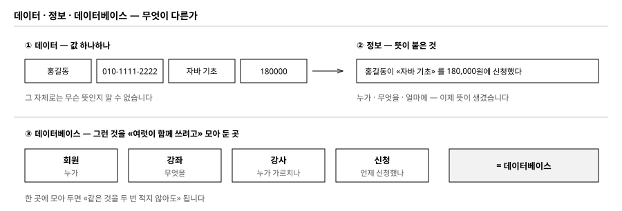
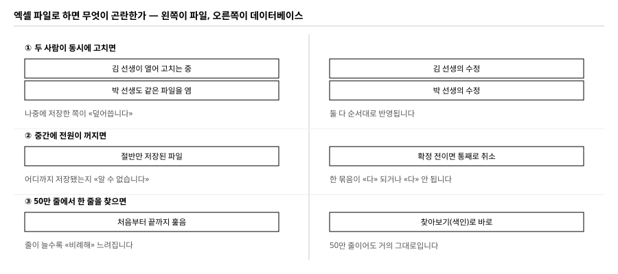
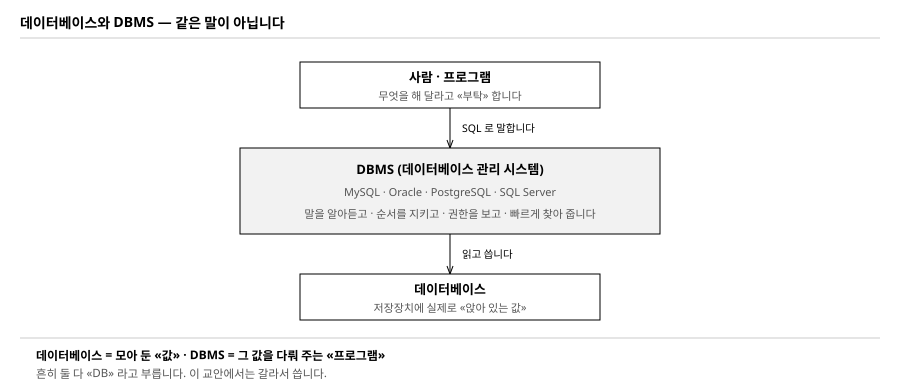
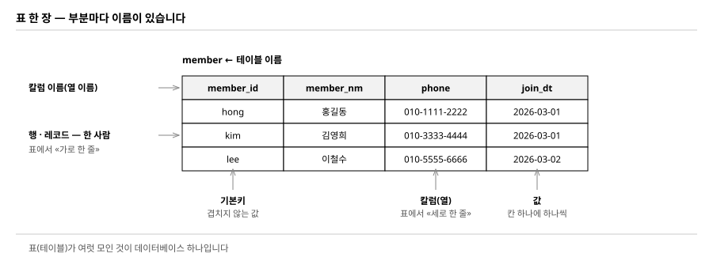
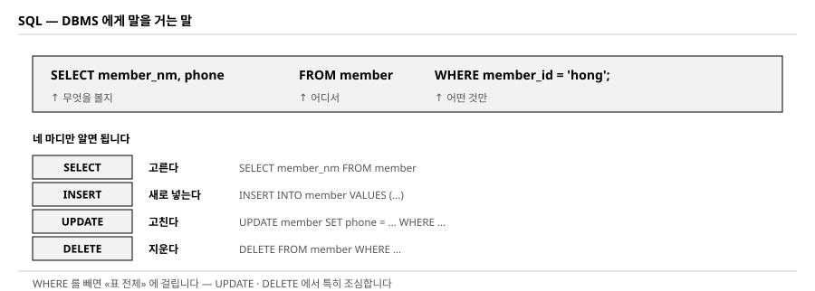
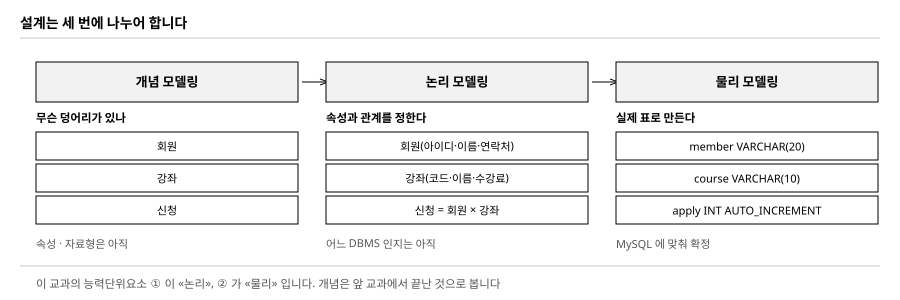

능력단위 데이터 입출력 구현 (2001020205_23v6) / 5수준 · 48시간 · 능력단위요소 4개 · 수행준거 13개
이 교과는 표를 만드는 법을 배우는 과목이 아닙니다. 업무에서 받은 종이 한 장을 표 여러 개로 바꾸고, 그 표에 프로그램이 드나들게 하고, 느려지면 원인을 찾아 고치는 것까지가 한 덩어리입니다. NCS 가 능력단위요소를 넷으로 나눈 것이 그 차례 그대로입니다.
| 묶음 | 능력단위요소 | 무엇을 하는가 | 수행준거 |
|---|---|---|---|
| ① | 논리 데이터저장소 확인하기 | 받은 설계 내역에서 데이터 유형 · 논리적 단위 · 관계 · 제약조건을 식별한다 | 1-1 ~ 1-3 |
| ② | 물리 데이터저장소 설계하기 | 엔티티를 테이블로 옮기고, 자료형 · 길이 · 반정규화를 정해 실제 공간을 만든다 | 2-1 ~ 2-3 |
| ③ | 데이터 조작 프로시저 작성하기 | 연결 · 읽기 · 쓰기 프로시저를 만들고 테스트 케이스를 명세한다 | 3-1 ~ 3-4 |
| ④ | 데이터 조작 프로시저 최적화하기 | 성능을 재고, 병목을 찾고, 고친 뒤 같은 방법으로 다시 잰다 | 4-1 ~ 4-3 |
| 산출물 | 무엇을 적는가 | 덮는 수행준거 |
|---|---|---|
논리데이터모델_검증서 |
엔티티 · 속성 · 관계 · 제약조건 · 정규화 결과 | 1-1 · 1-2 · 1-3 |
물리데이터모델_설계서 |
테이블 정의서 · 자료형과 길이 · 반정규화 판단 | 2-1 · 2-2 |
schema.sql |
실제로 도는 DDL — 제약조건 · 인덱스 · 뷰 | 2-3 |
DAO 소스 + 테스트케이스_명세서 |
연결 · 조회 · 저장 프로시저와 시험 조건 | 3-1 ~ 3-4 |
성능개선_보고서 |
고치기 전 숫자 · 병목 · 고친 내용 · 고친 뒤 숫자 | 4-1 · 4-2 · 4-3 |
실습 내내 같은 예제를 씁니다. 학원에서 종이로 받던 수강신청서 한 장이 출발점입니다. 이 종이가 어떻게 표 넷으로 나뉘고, 프로그램이 어떻게 그 표를 드나들고, 50만 줄이 되었을 때 무엇이 느려지는지를 차례로 봅니다.
이 교과는 데이터베이스를 한 번도 안 다뤄 본 사람도 시작할 수 있습니다. 다만 말이 낯설어서 어렵게 느껴집니다. 이 절에서 말 여덟 개를 확실히 해 두고 시작하겠습니다. 여기만 넘기면 나머지는 «해 보기» 입니다.

| 말 | 뜻 | 예 |
|---|---|---|
| 데이터 | 값 하나하나 | 홍길동 · 180000 · 2026-03-02 |
| 정보 | 데이터에 뜻이 붙은 것 | 「홍길동이 자바 기초를 180,000원에 신청했다」 |
| 데이터베이스 | 그런 것을 여럿이 함께 쓰려고 모아 둔 곳 | 회원 · 강좌 · 강사 · 신청을 함께 담아 둔 eduio |
180000 만 놓고 보면 무엇인지 모릅니다.
「무엇의 값인가」 가 붙어야 쓸모가 생깁니다.
데이터베이스를 만드는 일은 결국
어떤 값에 어떤 뜻을 붙여 어디에 놓을지 정하는 일입니다.
가장 먼저 드는 생각입니다. 엑셀로도 표를 만들 수 있는데 왜 데이터베이스인가. 실제로 사람이 적고 사람이 보는 정도면 엑셀이 낫습니다. 프로그램이 드나들기 시작하면 세 가지에서 막힙니다.

| 무엇이 | 파일이면 | 데이터베이스면 |
|---|---|---|
| 동시에 고치기 | 나중에 저장한 쪽이 덮어씁니다 | 차례를 잡아 주어 둘 다 반영됩니다 |
| 중간에 멈추기 | 절반만 저장되고 어디까지인지 모릅니다 | 다 되거나 다 안 되거나 둘 중 하나입니다 |
| 많은 줄에서 찾기 | 처음부터 끝까지 훑어 비례해 느려집니다 | 찾아보기(색인)로 거의 그대로입니다 |
셋 다 이 교안에서 직접 확인합니다 — 둘째는 실습 12(되돌리기), 셋째는 실습 14·15(50만 줄에서 재기)입니다. 지금은 「그렇다더라」 로 두고 넘어가면 됩니다.
가장 많이 헷갈리는 자리입니다. 둘 다 흔히 「DB」 라고 부르기 때문입니다.

eduio
DBMS그 값을 대신 다뤄 주는 프로그램. 우리 예제에서는 MySQL 8.0
실습 1 에서 docker run … mysql:8.0 으로 띄우는 것이 DBMS 이고,
그 안에서 CREATE DATABASE eduio 로 만드는 것이 데이터베이스입니다.
DBMS 하나 안에 데이터베이스가 여럿 들어갑니다.
| DBMS | 만든 곳 | 이 교안과의 관계 |
|---|---|---|
| MySQL | Oracle | 이 교안이 쓰는 것. 무료로 쓸 수 있고 자료가 많습니다 |
| Oracle Database | Oracle | NCS 학습모듈의 예시가 이것입니다 (TKPROF · EXPLAIN PLAN) |
| PostgreSQL | 공개 공동체 | 공공기관에서 많이 씁니다 |
| SQL Server | Microsoft | 윈도 서버 환경에서 많이 씁니다 |
SELECT · INSERT 같은 말은
어느 DBMS 에서나 거의 그대로 씁니다.
다른 것은 자료형 이름과 오류 번호 정도입니다.
하나를 제대로 익히면 옮겨 가기 쉽습니다.데이터베이스 안의 값은 표 모양으로 앉습니다. 부분마다 이름이 있습니다.

| 이름 | 다르게도 부릅니다 | 뜻 |
|---|---|---|
| 테이블 | 표 · 릴레이션 | 값이 앉는 표 한 장. 이름이 있습니다 (member) |
| 칼럼 | 열 · 속성 · 필드 | 표의 세로 한 줄. 무엇을 적는 칸인지 정합니다 |
| 행 | 로우 · 레코드 · 튜플 | 표의 가로 한 줄. 대상 하나가 한 줄입니다 |
| 기본키 | PK · Primary Key | 그 줄을 콕 집어 주는 칼럼. 값이 겹치면 안 됩니다 |
기본키가 왜 필요한가 — 같은 이름을 가진 사람이 둘 있으면
「홍길동을 지워라」 로는 누구를 지울지 정해지지 않습니다.
member_id 처럼 겹치지 않는 값이 하나 있어야
프로그램이 한 줄을 정확히 가리킬 수 있습니다.
010-1111-2222, 010-9999-8888 처럼
한 칸에 쉼표로 이어 적으면 안 됩니다.
그렇게 적으면 「둘째 번호로 찾기」 가 안 됩니다.
이 규칙에 이름이 붙어 있는데, 그것이 제1정규형입니다 (실습 4).DBMS 에게 시키는 말이 SQL 입니다. 「에스큐엘」 또는 「시퀄」 이라고 읽습니다. 영어 문장처럼 생겼고, 실제로 영어 어순 그대로 읽으면 됩니다.

SELECT member_nm, phone FROM member WHERE member_id = 'hong';
무엇을 볼지 어디서 어떤 것만
우리말로 읽으면 「member 에서 member_id 가 hong 인 줄의
이름과 전화번호를 보여 달라」 입니다. 그것이 전부입니다.
| 말 | 하는 일 | 이 교안에서 처음 쓰는 곳 |
|---|---|---|
| SELECT | 고른다 (본다) | 실습 4 — 중복을 세어 봅니다 |
| INSERT | 새로 넣는다 | 실습 1 — 신청서 다섯 장을 넣습니다 |
| UPDATE | 고친다 | 실습 4 — 전화번호를 바꿉니다 |
| DELETE | 지운다 | 실습 8 — 회원을 지워 봅니다 |
WHERE 를 빠뜨리면 «표 전체» 에 걸립니다.
UPDATE member SET phone = '010-0000-0000' 만 치면
모든 회원의 전화번호가 같아집니다.
오류는 나지 않습니다.
실습 13 에서 DELETE 쪽으로 직접 한 번 내 봅니다 —
겪어 봐야 조심하게 됩니다.여기부터가 이 교과의 본론입니다. 표를 바로 만들지 않고 세 번에 나누어 정합니다. 이름이 비슷해서 헷갈리는데, 무엇을 정하느냐가 다릅니다.

| 단계 | 여기서 정하는 것 | 아직 정하지 않는 것 |
|---|---|---|
| 개념 모델링 | 전사 수준에서 무슨 덩어리가 있는지와 주요 업무 규칙 | 속성 · 자료형 · 표 이름 |
| 논리 모델링 | 엔티티 · 속성 · 관계 · 제약조건 · 정규화 | 어떤 DBMS 를 쓸지 · 자료형 · 인덱스 |
| 물리 모델링 | 테이블 · 칼럼 · 자료형과 길이 · 인덱스 · 반정규화 | — |
이 교과의 능력단위요소 ① 이 논리, ② 가 물리입니다. 순서를 바꾸면 안 되는 이유는 하나입니다. 논리에서 중복을 없애 놓아야, 물리에서 «일부러» 되살릴 수 있기 때문입니다. 처음부터 중복된 채로 만들면 그것은 반정규화가 아니라 그냥 잘못된 설계입니다.
| 물음 | |
|---|---|
| □ | 데이터베이스와 DBMS 가 어떻게 다른지 한 문장으로 말할 수 있습니까 |
| □ | 표에서 행과 칼럼 중 어느 것이 «가로» 입니까 |
| □ | 기본키가 없으면 무엇이 곤란합니까 |
| □ | SELECT 문장의 세 마디를 댈 수 있습니까 |
| □ | WHERE 를 빠뜨리면 무슨 일이 납니까 |
| □ | 설계를 세 번에 나누어 하는 까닭이 무엇입니까 |
여섯 줄에 다 답할 수 있으면 넘어가십시오. 막히는 줄이 있으면 그 줄에 해당하는 그림만 다시 보십시오 — 외울 것은 아니고, 뒤에서 계속 나오므로 익숙해지면 됩니다.
아래부터는 능력단위요소 넷을 레벨 1~4 로 나누어 차례로 갑니다. 단계마다 실습이 하나씩 붙어 있습니다. 실습을 건너뛰면 다음 단계의 재료가 없어서 막힙니다 — 앞 실습의 결과물이 뒤 실습의 입력이기 때문입니다.
학원에서 쓰던 수강신청서입니다. 다섯 장을 받았다고 칩시다. 지금은 표가 하나뿐이고, 한 줄이 곧 신청서 한 장입니다.
+----------+-----------+-----------+---------------+-----------+------------------+------------+--------+------------+
| sheet_no | member_id | member_nm | phone | course_cd | course_nm | teacher_nm | fee | apply_dt |
+----------+-----------+-----------+---------------+-----------+------------------+------------+--------+------------+
| 1 | hong | 홍길동 | 010-1111-2222 | C01 | 자바 기초 | 김강사 | 180000 | 2026-03-02 |
| 2 | hong | 홍길동 | 010-1111-2222 | C02 | SQL 입문 | 박강사 | 150000 | 2026-03-02 |
| 3 | kim | 김영희 | 010-3333-4444 | C01 | 자바 기초 | 김강사 | 180000 | 2026-03-03 |
| 4 | lee | 이철수 | 010-5555-6666 | C01 | 자바 기초 | 김강사 | 180000 | 2026-03-04 |
| 5 | kim | 김영희 | 010-3333-4444 | C03 | 스프링 실무 | 김강사 | 220000 | 2026-03-05 |
+----------+-----------+-----------+---------------+-----------+------------------+------------+--------+------------+
이 교과가 끝나면 위의 한 표가 아래 넷으로 갈라져 있고, 자바 프로그램이 그 넷을 이어서 읽고 씁니다.
mysql> SHOW TABLES;
+-----------------+
| Tables_in_eduio |
+-----------------+
| apply | ← 신청 (누가 · 무엇을 · 언제)
| apply_sheet | ← 출발점으로 삼은 장표 (비교용으로 남겨 둡니다)
| course | ← 강좌
| member | ← 회원
| teacher | ← 강사
+-----------------+
답은 「홍길동의 전화번호가 바뀌면 몇 군데를 고쳐야 하는가」 하나로 충분합니다. 지금 표에서는 두 줄입니다. 신청을 열 번 했으면 열 줄입니다. 한 줄이라도 빠뜨리면 같은 사람에게 전화번호가 두 개가 됩니다. 이것을 갱신 이상이라고 하고, 실습 4 에서 직접 만들어 봅니다.
| 무엇 | 판 | 어디에 쓰나 |
|---|---|---|
| MySQL | 8.0 | 표를 만들고 SQL 을 칩니다 |
| JDK | 17 이상 | DAO 를 만들고 돌립니다 |
| MySQL Connector/J | 9.x | 자바가 MySQL 에 붙는 다리입니다 |
목적 — 뒤의 실습 열다섯이 전부 이 데이터베이스 위에서 돕니다. 여기서 안 붙으면 아무것도 못 합니다.
이미 깔린 MySQL 이 있으면 그것을 쓰십시오. 없으면 도커 한 줄이면 됩니다.
docker run -d --name eduio-db -p 3399:3306 \
-e MYSQL_ROOT_PASSWORD=Root11! mysql:8.0
| 값 | 이 교안에서 쓰는 것 |
|---|---|
| 포트 | 3399 — 이미 3306 을 쓰고 있어도 안 부딪칩니다 |
| 계정 | root / Root11! |
| 데이터베이스 | eduio |
mysql -h 127.0.0.1 -P 3399 -u root -p
| 이렇게 나오면 | 볼 곳 |
|---|---|
Can't connect to MySQL server |
아직 뜨는 중입니다. 10초쯤 기다렸다 다시 하십시오 |
Access denied for user 'root' |
비밀번호가 다릅니다. 느낌표까지 넣었는지 보십시오 |
01_base.sql 이라는 이름으로 저장하십시오.
DROP DATABASE IF EXISTS eduio;
CREATE DATABASE eduio DEFAULT CHARACTER SET utf8mb4;
USE eduio;
CREATE TABLE apply_sheet (
sheet_no INT PRIMARY KEY,
member_id VARCHAR(20),
member_nm VARCHAR(40),
phone VARCHAR(20),
course_cd VARCHAR(10),
course_nm VARCHAR(60),
teacher_nm VARCHAR(40),
fee INT,
apply_dt DATE
);
INSERT INTO apply_sheet VALUES
(1,'hong','홍길동','010-1111-2222','C01','자바 기초','김강사',180000,'2026-03-02'),
(2,'hong','홍길동','010-1111-2222','C02','SQL 입문','박강사',150000,'2026-03-02'),
(3,'kim','김영희','010-3333-4444','C01','자바 기초','김강사',180000,'2026-03-03'),
(4,'lee','이철수','010-5555-6666','C01','자바 기초','김강사',180000,'2026-03-04'),
(5,'kim','김영희','010-3333-4444','C03','스프링 실무','김강사',220000,'2026-03-05');
mysql -h 127.0.0.1 -P 3399 -u root -p --default-character-set=utf8mb4 < 01_base.sql
--default-character-set=utf8mb4 를 빼면 지금은 멀쩡해 보입니다.
그런데 실습 10 에서 자바로 읽을 때 한글이 깨집니다.
깨진 채로 저장되었다가 프로그램에서만 드러나는 것입니다.
왜 그런지는 실습 10 에서 일부러 재현해서 봅니다.
지금은 이 옵션을 반드시 넣고 넘어가십시오.mysql> USE eduio;
mysql> SELECT COUNT(*) FROM apply_sheet;
+----------+
| COUNT(*) |
+----------+
| 5 |
+----------+
제출물 — 01_base.sql +
SELECT COUNT(*) 가 5 로 나온 화면
스스로 확인 —
① 데이터베이스에 붙었습니까
② --default-character-set=utf8mb4 를 넣었습니까
③ 다섯 줄이 다 들어갔습니까
학습모듈은 수행준거 1-1 을 이렇게 씁니다 — 「설계 내역에서 정의된 데이터의 유형을 확인하고 식별할 수 있다」. 해 보기 절차는 셋으로 쪼개져 있습니다.
| 절차 | 우리 예제에서는 | |
|---|---|---|
| 1 | 구축 시스템의 업무 관련 데이터 유형을 식별 | 신청서에 적힌 항목 아홉을 종류별로 나눕니다 |
| 2 | 현재 운영 중인 시스템의 데이터 현황 분석 | 지금은 종이와 엑셀입니다. 그것도 «현행» 입니다 |
| 3 | 사용자 요구사항이 반영되었는지 분석 | 요구사항에 있는데 신청서에 없는 항목을 찾습니다 |
여기서 말하는 유형은 VARCHAR 같은 것이 아닙니다.
자료형은 물리 단계(레벨 2)에서 정합니다.
논리 단계에서 말하는 유형은 그 값이 업무에서 어떤 성격인가입니다.
| 유형 | 성격 | 예제의 항목 |
|---|---|---|
| 식별 항목 | 하나를 콕 집어 주는 값 | member_id · course_cd · sheet_no |
| 기술 항목 | 대상을 설명하는 값 | member_nm · course_nm · teacher_nm |
| 수량 항목 | 계산에 들어가는 값 | fee |
| 시점 항목 | 언제인가를 적는 값 | apply_dt |
| 연락 항목 | 개인을 찾아가는 값 — 보호 대상 | phone |
「현재 운영 중인 시스템」 이 없다고 넘어가면 절차 2 가 비어 버립니다. 종이로 받고 엑셀로 옮겨 적고 있다면 그것이 현행입니다. 현행에서 봐야 할 것은 셋입니다.
| 무엇을 보나 | 예제에서 나온 것 |
|---|---|
| 같은 값이 여러 곳에 | 홍길동의 전화번호가 신청서 두 장에 각각 적혀 있습니다 |
| 빠질 수 있는 값 | 전화번호를 안 적고 낸 신청서가 있었습니다 |
| 사람이 외워 쓰는 값 | 강좌 코드 C01 을 손으로 적다 CO1 로 잘못 씁니다 |
요구사항 목록을 옆에 놓고 한 줄씩 지워 가며 봅니다. 지워지지 않는 줄이 지금 데이터에 없는 것입니다.
RQ-01 회원은 여러 강좌를 신청할 수 있다 → sheet 에 같은 회원이 두 줄 ○
RQ-02 같은 강좌를 두 번 신청할 수 없다 → 막는 장치가 «없다» ✗
RQ-03 강좌마다 담당 강사가 한 명 있다 → teacher_nm 이 있다 ○
RQ-04 강사가 바뀌면 그 강좌만 바뀐다 → 고칠 곳이 «여러 줄» ✗
RQ-05 신청 취소 이력을 남긴다 → 항목이 «아예 없다» ✗
✗ 세 줄이 이 교과가 할 일입니다. RQ-02 는 제약조건(실습 8)으로, RQ-04 는 정규화(실습 4)로, RQ-05 는 엔티티 추가(실습 3)로 풀립니다.
목적 — 수행준거 1-1 의 산출물입니다. 표를 그리기 전에 무엇이 있는지부터 적습니다.
표 구조를 확인해서 항목 이름과 개수를 그대로 받아 적습니다.
mysql> DESC apply_sheet;
+------------+-------------+------+-----+---------+-------+
| Field | Type | Null | Key | Default | Extra |
+------------+-------------+------+-----+---------+-------+
| sheet_no | int | NO | PRI | NULL | |
| member_id | varchar(20) | YES | | NULL | |
| member_nm | varchar(40) | YES | | NULL | |
| phone | varchar(20) | YES | | NULL | |
| course_cd | varchar(10) | YES | | NULL | |
| course_nm | varchar(60) | YES | | NULL | |
| teacher_nm | varchar(40) | YES | | NULL | |
| fee | int | YES | | NULL | |
| apply_dt | date | YES | | NULL | |
+------------+-------------+------+-----+---------+-------+
아홉 줄짜리 표를 만들고 유형 칸과 보호 칸을 채웁니다.
| 항목 | 유형 | 보호 | 업무에서 부르는 이름 |
|---|---|---|---|
member_id | 식별 | — | 회원 아이디 |
member_nm | 기술 | — | 회원 이름 |
phone | 연락 | ○ | 연락처 |
course_cd | 식별 | — | 강좌 코드 |
fee | 수량 | — | 수강료 |
apply_dt | 시점 | — | 신청일 |
나머지 셋(sheet_no · course_nm · teacher_nm)은
여러분이 채우십시오.
이름만 보고 자료형을 정하면 반드시 틀립니다. 실제 값을 세어 봅니다.
mysql> SELECT MAX(CHAR_LENGTH(member_nm)) AS 이름최대,
-> MAX(CHAR_LENGTH(phone)) AS 전화최대,
-> MIN(fee) AS 최저, MAX(fee) AS 최고
-> FROM apply_sheet;
+--------------+--------------+--------+--------+
| 이름최대 | 전화최대 | 최저 | 최고 |
+--------------+--------------+--------+--------+
| 3 | 13 | 150000 | 220000 |
+--------------+--------------+--------+--------+
이 숫자가 레벨 2 에서 길이를 정할 때 쓰는 근거입니다.
「대충 VARCHAR(255)」 라고 적으면 여기서 점수를 잃습니다.
위의 RQ 목록처럼 다섯 줄을 적고 ○ / ✗ 를 답니다. ✗ 가 하나도 없으면 잘못 본 것입니다. 장표 한 장으로 될 업무는 없습니다.
| 나오는 것 | 볼 곳 |
|---|---|
ERROR 1046 (3D000): No database selected |
USE eduio; 를 안 쳤습니다 |
ERROR 1146 (42S02): Table 'eduio.apply_sheet'
doesn't exist |
실습 1 의 01_base.sql 을 안 돌렸습니다 |
한글이 ? 나 네모로 보임 |
터미널 글꼴 문제입니다. 값은 멀쩡합니다 —
SELECT HEX(member_nm) 로 확인하십시오 |
제출물 — 자료 항목 목록(아홉 줄, 유형·보호 칸 포함) + 길이 근거 숫자 + 요구사항 대조표
스스로 확인 — ① 아홉 항목에 유형을 다 붙였습니까 ② 보호 대상을 갈라 놓았습니까 ③ 길이를 세어서 근거를 남겼습니까 ④ 요구사항 대조에서 ✗ 를 찾았습니까
수행준거 1-2 는 「데이터의 논리적 단위와 데이터 간의 관계를 확인한다」 입니다. 논리적 단위가 곧 엔티티입니다. 찾는 방법은 어렵지 않습니다.
이 질문으로 아홉 항목을 훑으면 넷이 남습니다.
| 엔티티 | 식별자 | 속성 |
|---|---|---|
| 회원 | member_id |
이름 · 연락처 · 가입일 |
| 강사 | teacher_no |
강사명 |
| 강좌 | course_cd |
강좌명 · 수강료 · 담당 강사 |
| 신청 | apply_no |
회원 · 강좌 · 신청일 |
강사를 따로 뽑은 까닭이 중요합니다.
신청서에는 teacher_nm 밖에 없습니다.
그런데 요구사항 RQ-04 가 「강사가 바뀌면 그 강좌만 바뀐다」 였습니다.
이름만 들고 있으면 동명이인을 못 가릅니다.
요구사항이 엔티티를 하나 더 만들어 낸 것입니다.
관계는 양쪽에서 한 번씩 물어야 정해집니다. 한쪽만 물으면 반드시 틀립니다.
| 관계 | 한쪽에서 보면 | 반대쪽에서 보면 |
|---|---|---|
| 강사 — 강좌 | 강사 한 명이 강좌를 여럿 맡는다 | 강좌 하나에 강사는 한 명 → 1 : N |
| 회원 — 강좌 | 회원 한 명이 강좌를 여럿 신청한다 | 강좌 하나를 회원 여럿이 신청한다 → N : M |
도구가 없어도 됩니다. 아래처럼 적으면 검증서에 그대로 붙습니다.
강사(teacher_no) ──1───N── 강좌(course_cd)
│
N
│
회원(member_id) ──1───N── 신청(apply_no)
읽는 법
강사 1 명 : 강좌 N 개 강좌 1 개 : 강사 1 명
회원 1 명 : 신청 N 건 강좌 1 개 : 신청 N 건
⇒ 회원 N 명 : 강좌 M 개 를 «신청» 이 풀어 준다
| 점검 | 무엇을 보나 |
|---|---|
| 데이터 흐름 정의 | 값이 어디서 들어와 어디로 나가는지. 신청일은 신청할 때 생기고, 수강료는 강좌에서 따라옵니다 |
| 설계 기준 정의 | 이름 짓는 규칙 · 코드 체계.
member_id 처럼 소문자에 밑줄로 통일했는지 |
| 모델링 완성도 | 식별자가 없는 엔티티나 어느 엔티티에도 안 붙는 속성이 남아 있지 않은지 |
목적 — 수행준거 1-2 의 산출물입니다. 실습 2 에서 찾은 ✗ 세 줄이 여기서 쓰입니다.
아홉 항목을 놓고 위의 질문을 던집니다. 아닌 것도 적어 두십시오. 왜 뺐는지가 검증서의 내용이 됩니다.
| 후보 | 엔티티? | 까닭 |
|---|---|---|
| 회원 | ○ | 신청과 무관하게 가입·탈퇴한다 |
| 강좌 | ○ | 신청과 무관하게 열리고 닫힌다 |
| 강사 | ○ | 요구사항 RQ-04 가 «강좌만 바뀐다» 를 요구한다 |
| 신청 | ○ | 회원과 강좌의 N : M 을 푸는 관계 엔티티 |
| 수강료 | × | 강좌가 없으면 존재하지 않는다 → 강좌의 속성 |
| 신청일 | × | 신청이 없으면 존재하지 않는다 → 신청의 속성 |
| 엔티티 | 식별자 | 고른 까닭 |
|---|---|---|
| 회원 | member_id |
업무에서 이미 쓰는 값입니다 |
| 강좌 | course_cd |
마찬가지로 업무 코드입니다 |
| 강사 | teacher_no |
업무에 코드가 없어서 새로 만듭니다 (일련번호) |
| 신청 | apply_no |
일련번호. 「회원+강좌」 로도 유일하지만 다루기 번거롭습니다 |
실습 2 의 RQ-05 신청 취소 이력을 남긴다 가 ✗ 였습니다.
지금 엔티티 넷 중 어디에도 취소를 적을 자리가 없습니다.
| 이렇게 풀면 | 이렇게 풀면 |
|---|---|
| 신청에 «상태» 속성을 더한다 간단합니다. 그런데 언제 취소했는지는 못 남깁니다 |
«신청이력» 엔티티를 더한다 취소 시각·사유까지 남습니다. 표가 하나 늘어납니다 |
둘 중 어느 쪽이든 됩니다. 중요한 것은 요구사항 한 줄 때문에 모델이 바뀌었다는 사실을 검증서에 적는 것입니다. 이 교안은 왼쪽(상태 속성)으로 갑니다 — 표를 늘리지 않고 끝까지 가기 위해서입니다.
위의 「관계를 글로 그리기」 를 여러분 예제로 다시 씁니다. 엔티티 넷, 관계 셋, 각 관계마다 양쪽 방향의 문장이 있어야 합니다.
제출물 — 엔티티 후보표(뺀 것 포함) + 식별자표 + 관계도 + 요구사항 때문에 바뀐 점 한 문단
스스로 확인 — ① 엔티티마다 식별자가 있습니까 ② 어느 엔티티에도 안 붙는 떠도는 속성이 없습니까 ③ 관계를 양쪽에서 읽어 봤습니까 ④ N : M 을 관계 엔티티로 풀었습니까
정규형을 외우기 전에, 안 하면 무슨 일이 생기는지부터 봅니다. 학습모듈은 정규화를 「중복성을 최소화하고 정보의 일관성을 보장하기 위한 개념」 이라고 씁니다. 그 일관성이 깨지는 모습이 이상(anomaly)입니다.
| 이상 | 언제 생기나 | 예제에서 |
|---|---|---|
| 갱신 이상 | 같은 값이 여러 줄에 있는데 일부만 고칠 때 | 홍길동 전화번호를 한 줄만 고침 |
| 삽입 이상 | 다른 값이 없어서 넣지 못할 때 | 아직 아무도 신청 안 한 강좌를 등록할 수 없음 |
| 삭제 이상 | 한 줄을 지우면 다른 정보까지 사라질 때 | 신청을 취소하면 그 강좌 정보까지 사라짐 |
정규화의 판단 기준은 함수 종속 하나입니다.
A → B 는 「A 값이 정해지면 B 값도 저절로 정해진다」 는 뜻입니다.
apply_sheet 의 함수 종속
sheet_no → member_id, course_cd, apply_dt ← 신청서 번호가 정하는 것
member_id → member_nm, phone ← 회원 아이디가 정하는 것
course_cd → course_nm, teacher_nm, fee ← 강좌 코드가 정하는 것
둘째·셋째 줄이 문제입니다.
주 식별자(sheet_no)가 아닌 값이 다른 값을 정하고 있습니다.
이것을 이행적 종속이라 하고, 없애는 것이 제3정규형입니다.
| 정규형 | 없애는 것 | 예제에서 한 일 |
|---|---|---|
| 제1정규형 | 한 칸에 값이 여러 개 들어간 것 | 이미 만족합니다 — 한 칸에 하나씩 적혀 있습니다 |
| 제2정규형 | 식별자 일부에만 딸린 속성 | 식별자가 sheet_no 하나뿐이라 해당 없음 |
| 제3정규형 | 식별자가 아닌 값에 딸린 속성 | 회원 · 강좌 · 강사를 갈라냈습니다 |
수행준거 1-3 은 제약조건만 보는 것이 아닙니다. 「데이터 접근권한 및 통제 기준을 확인한다」 가 들어 있습니다. 실습 2 에서 보호 대상을 갈라 둔 것이 여기서 쓰입니다.
| 역할 | 회원 | 신청 | 연락처 |
|---|---|---|---|
| 수강생 | 자기 것만 조회·수정 | 자기 것만 | 자기 것만 |
| 강사 | 이름만 | 담당 강좌 신청자 조회 | 못 봄 |
| 관리자 | 전부 | 전부 | 전부 |
강사 줄이 요점입니다. 담당 강좌의 신청자는 봐야 하지만 연락처는 볼 이유가 없습니다. 이 판단이 나중에 뷰(실습 8)로 구현됩니다 — 연락처를 뺀 채로 보여 주는 뷰를 만들면 됩니다.
목적 — 수행준거 1-3 의 근거를 말이 아니라 숫자로 남깁니다. 「중복되면 위험하다」 고 쓰는 것과 「고쳤더니 전화번호가 두 개가 되었다」 고 보이는 것은 다릅니다.
홍길동이 전화번호를 바꿨다고 신고했습니다. 신청서 1번을 찾아 고칩니다.
mysql> UPDATE apply_sheet SET phone='010-9999-0000' WHERE sheet_no=1;
Query OK, 1 row affected (0.01 sec)
mysql> SELECT sheet_no, member_id, member_nm, phone
-> FROM apply_sheet WHERE member_id='hong';
+----------+-----------+-----------+---------------+
| sheet_no | member_id | member_nm | phone |
+----------+-----------+-----------+---------------+
| 1 | hong | 홍길동 | 010-9999-0000 |
| 2 | hong | 홍길동 | 010-1111-2222 |
+----------+-----------+-----------+---------------+
한 사람인데 전화번호가 둘이 되었습니다. 오류는 나지 않았습니다. 그래서 더 나쁩니다 — 아무도 모르는 채로 남습니다.
검증서에 붙일 것은 위 화면이 아니라 이 숫자입니다.
mysql> SELECT member_id, COUNT(DISTINCT phone) AS phone_kinds
-> FROM apply_sheet GROUP BY member_id;
+-----------+-------------+
| member_id | phone_kinds |
+-----------+-------------+
| hong | 2 | ← 1 이어야 하는데 2 입니다
| kim | 1 |
| lee | 1 |
+-----------+-------------+
COUNT(DISTINCT …) 가 1 보다 크면 중복이 어긋난 것입니다.
회원 이름·강좌명·수강료에도 똑같이 걸어 보십시오.
모델이 잘못됐다는 주장을 숫자로 만드는 법입니다.레벨 2 에서 만들 member 표에서는 같은 SQL 이 이렇게 나옵니다.
mysql> SELECT member_id, COUNT(DISTINCT phone) AS phone_kinds
-> FROM member GROUP BY member_id;
+-----------+-------------+
| member_id | phone_kinds |
+-----------+-------------+
| hong | 1 |
| kim | 1 |
| lee | 1 |
+-----------+-------------+
2 가 나올 수가 없습니다. 회원 한 명이 한 줄뿐이니 고칠 자리가 애초에 하나입니다. 이것이 정규화의 효과 전부입니다.
| 이상 | 해 보는 법 | 나오는 결과 |
|---|---|---|
| 삽입 | 신청자가 없는 강좌 C04 를 apply_sheet 에 넣어 보기 |
회원 칸을 비워야 합니다 — 넣을 자리가 없습니다 |
| 삭제 | DELETE FROM apply_sheet WHERE sheet_no=5; |
C03 강좌 정보가 통째로 사라집니다 (그 줄이 유일) |
위의 3×4 표를 여러분 예제로 채웁니다. 「못 봄」 이 한 칸이라도 없으면 다시 보십시오 — 전부 다 볼 수 있는 설계는 통제 기준을 세우지 않은 것입니다.
제출물 — 함수 종속 목록 + 정규형 세 줄(해당 없는 것도) +
COUNT(DISTINCT) 검증 화면 둘(나누기 전·후) + 권한표
스스로 확인 —
① 갱신 이상을 직접 만들어 봤습니까
② phone_kinds 가 2 로 나온 화면을 남겼습니까
③ 정규형을 셋 다 적었습니까
④ 권한표에 「못 봄」 이 있습니까
학습모듈의 해 보기 절차가 그대로 규칙입니다. 외울 것이 넷뿐입니다.
| 논리 | 물리 | 예제 | |
|---|---|---|---|
| 1 | 단위 엔티티 | 테이블 | 회원 → member |
| 2 | 속성 | 칼럼 | 연락처 → phone |
| 3 | UID(식별자) | 기본키 PK | member_id → PRIMARY KEY |
| 4 | 관계 | 외래키 FK | 강좌—강사 → course.teacher_no |
규칙 4 만 헷갈립니다. 1 : N 에서 외래키는 언제나 N 쪽에 들어갑니다.
강사 1 ────< N 강좌
○ 맞는 것 : course 표에 teacher_no 를 둔다 (N 쪽)
× 틀린 것 : teacher 표에 course_cd 를 여러 개 둔다 (1 쪽 — 칸이 모자람)
까닭은 칸이 하나뿐이기 때문입니다. 강좌는 강사가 한 명이니 한 칸이면 되지만, 강사는 강좌가 여럿이라 한 칸에 못 담습니다.
수행준거 1-2 의 「설계 기준」 이 여기서 실물이 됩니다. 규칙을 먼저 적고 그대로 지키십시오. 규칙 자체는 무엇이든 됩니다.
member, course (members 아님)
칼럼 이름소문자 + 밑줄 — member_nm
기본키표이름_cd 또는 표이름_no
제약조건pk_ · fk_ · uq_ · idx_ 로 시작
course_ibfk_1 같은 이름을 자동으로 답니다.
나중에 오류가 났을 때 그 이름만 보고는 무엇이 걸렸는지 모릅니다.
실습 8 에서 직접 확인합니다.물리 설계서의 본문은 표마다 한 장씩 이런 모양입니다.
| 칼럼 | 자료형 | NULL | 키 | 설명 |
|---|---|---|---|---|
course_cd | VARCHAR(10) | NO | PK | 강좌 코드 — 업무 코드 |
course_nm | VARCHAR(60) | NO | — | 강좌명 |
teacher_no | INT | NO | FK | 담당 강사 → teacher |
fee | INT | NO | — | 수강료 (원) |
목적 — 수행준거 2-1 의 산출물입니다. SQL 을 치기 전에 종이에서 끝내는 것이 이 단계의 요점입니다.
| 엔티티 | 테이블 | 기본키 | 외래키 |
|---|---|---|---|
| 회원 | member |
member_id | 없음 |
| 강사 | teacher |
teacher_no | 없음 |
| 강좌 | course |
course_cd | teacher_no → teacher |
| 신청 | apply |
apply_no |
member_id → membercourse_cd → course |
신청 표에 외래키가 둘인 것을 확인하십시오. 관계 엔티티는 양쪽을 다 가리킵니다. 하나만 있으면 관계가 반쪽입니다.
실습 2 의 아홉 항목이 한 칸도 남김없이 어딘가로 갔는지 셉니다.
apply_sheet 아홉 칸이 간 곳
sheet_no → (버림) 장표 번호는 업무 의미가 없습니다
member_id → member.member_id / apply.member_id
member_nm → member.member_nm
phone → member.phone
course_cd → course.course_cd / apply.course_cd
course_nm → course.course_nm
teacher_nm → teacher.teacher_nm
fee → course.fee
apply_dt → apply.apply_dt
더 생긴 것 : teacher.teacher_no · apply.apply_no · member.join_dt
위의 course 정의서를 본보기로
member · teacher · apply 를 채웁니다.
자료형 칸은 아직 비워 두십시오 — 다음 단계에서 정합니다.
규칙 4 를 몸으로 익히는 방법입니다. 종이에 이렇게 그려 보십시오.
| teacher 표에 course_cd 를 두면 | course 표에 teacher_no 를 두면 |
|---|---|
| 김강사는 C01 · C03 을 맡았습니다. 칸 하나에 둘을 적을 수 없습니다. 칸을 course_cd1, course_cd2 로 늘리면
셋째 강좌를 맡는 날 표를 고쳐야 합니다 |
C01 은 김강사, C03 도 김강사. 같은 값이 두 줄에 들어갈 뿐입니다. 강좌가 몇 개로 늘어도 표 구조는 그대로입니다 |
제출물 — 변환표 + 아홉 칸이 간 곳 목록 + 테이블 정의서 넷(자료형 칸 제외)
스스로 확인 —
① 엔티티 넷이 테이블 넷이 되었습니까
② apply 에 외래키가 둘입니까
③ 아홉 칸이 다 어딘가로 갔습니까
④ 버린 것과 더 생긴 것의 까닭을 적었습니까
| 갈래 | MySQL 자료형 | 고르는 기준 |
|---|---|---|
| 글자 | CHAR(n) · VARCHAR(n) |
길이가 늘 같으면 CHAR, 들쭉날쭉하면 VARCHAR |
| 숫자 | INT · DECIMAL(p,s) · DOUBLE |
돈과 수량은 절대 DOUBLE 을 쓰지 않습니다 |
| 때 | DATE · DATETIME |
시각이 필요하면 DATETIME, 날짜만이면 DATE |
DOUBLE 을 쓰면 안 되는 까닭말로 하면 안 믿습니다. 쳐 보십시오.
mysql> SELECT 0.1+0.2 = 0.3 AS dec_eq;
+--------+
| dec_eq |
+--------+
| 1 | ← DECIMAL 로 셈하면 «같다»
+--------+
mysql> SELECT CAST(0.1 AS DOUBLE)+CAST(0.2 AS DOUBLE) = CAST(0.3 AS DOUBLE) AS dbl_eq;
+--------+
| dbl_eq |
+--------+
| 0 | ← DOUBLE 로 셈하면 «다르다»
+--------+
DOUBLE 은 2 진수로 근사해서 담기 때문입니다.
수강료 합계가 1원씩 어긋나는 사고가 여기서 납니다.
돈은 DECIMAL 이나 원 단위 INT 로 담으십시오.
이 교안은 수강료를 원 단위 INT 로 씁니다 — 소수점이 없는 금액입니다.CHAR 과 VARCHAR흔히 「CHAR 는 빈칸을 채운다」 고 배우는데, 읽을 때는 그렇게 보이지 않습니다.
mysql> CREATE TABLE t_try (c_char CHAR(10), c_var VARCHAR(10));
mysql> INSERT INTO t_try VALUES ('abc','abc');
mysql> SELECT CONCAT('[',c_char,']') AS ch, CONCAT('[',c_var,']') AS va,
-> LENGTH(c_char) AS ch_bytes, LENGTH(c_var) AS va_bytes FROM t_try;
+-------+-------+----------+----------+
| ch | va | ch_bytes | va_bytes |
+-------+-------+----------+----------+
| [abc] | [abc] | 3 | 3 |
+-------+-------+----------+----------+
둘이 똑같이 나옵니다. MySQL 은 CHAR 를 읽을 때 뒤 공백을 떼어 줍니다.
차이는 저장 공간에 있습니다 — CHAR(10) 은 세 글자를 넣어도 열 칸을 잡습니다.
그러니 길이가 늘 일정한 값(국가코드, 우편번호, 해시값)에만 쓰십시오.
mysql> INSERT INTO t_try (c_var) VALUES ('12345678901');
ERROR 1406 (22001): Data too long for column 'c_var' at row 1
오류가 납니다 — 잘려서 들어가지 않습니다.
그래서 길이를 너무 짧게 잡으면 운영 중에 터집니다.
반대로 무턱대고 255 로 잡으면
「왜 255 인가」 에 답할 수 없습니다.
| 칼럼 | 정한 길이 | 근거 |
|---|---|---|
member_id | VARCHAR(20) | 영문 아이디 규칙이 최대 20자 |
member_nm | VARCHAR(40) | 현행 최대 3자 + 외국인 이름 여유 |
phone | VARCHAR(20) | 현행 최대 13자(010-1111-2222) + 국가번호 여유 |
fee | INT | 현행 150,000 ~ 220,000 — INT 범위 안, 소수점 없음 |
apply_dt | DATE | 신청 시각은 업무에서 쓰지 않음 |
「현행 최대 3자」 「현행 최대 13자」 가 실습 2 에서 세어 둔 숫자입니다. 두 단계가 이렇게 이어집니다.
목적 — 수행준거 2-2 의 「칼럼 유형과 길이를 정의한다」 입니다. 정하고 끝내지 말고 시험해 봅니다.
실습 5 에서 비워 둔 칸을 채웁니다. 근거 칸을 함께 만드십시오. 근거가 없는 줄은 나중에 왜 그렇게 했는지 아무도 모릅니다.
NOT NULL 을 정합니다| 칼럼 | NULL | 까닭 |
|---|---|---|
member.member_nm | NO | 이름 없는 회원은 없습니다 |
member.phone | YES | 실습 2 에서 안 적고 낸 신청서가 있었습니다 |
apply.apply_dt | NO | 언제 신청했는지 모르는 신청은 없습니다 |
NOT NULL 로 막으면
현행 자료를 옮길 때 절반이 안 들어갑니다.
반대로 전부 열어 두면 제약조건을 세우지 않은 것입니다.
실습 2 의 현행 분석이 여기서 다시 쓰입니다.시험용 표를 하나 만들고 위의 세 화면을 여러분 손으로 재현합니다.
USE eduio;
DROP TABLE IF EXISTS t_try;
CREATE TABLE t_try (c_char CHAR(10), c_var VARCHAR(10)) DEFAULT CHARSET=utf8mb4;
INSERT INTO t_try VALUES ('abc','abc');
SELECT 0.1+0.2 = 0.3 AS dec_eq;
SELECT CAST(0.1 AS DOUBLE)+CAST(0.2 AS DOUBLE) = CAST(0.3 AS DOUBLE) AS dbl_eq;
INSERT INTO t_try (c_var) VALUES ('12345678901');
| 보여야 하는 것 | 뜻 |
|---|---|
dec_eq 가 1 | DECIMAL 셈은 정확합니다 |
dbl_eq 가 0 | DOUBLE 셈은 어긋납니다 |
ERROR 1406 | 길이를 넘기면 들어가지 않습니다 |
일부러 phone VARCHAR(11) 로 만들고 실제 번호를 넣어 보십시오.
ERROR 1406 (22001): Data too long for column 'phone' at row 1
010-1111-2222 는 13자입니다.
「전화번호는 11자리」 라고 생각하고 잡으면 하이픈 둘을 빠뜨립니다.
세어 본 숫자를 쓰라는 말이 이 뜻입니다.
mysql> DROP TABLE t_try;
제출물 — 자료형과 근거가 채워진 정의서 넷 +
dec_eq/dbl_eq 화면 + ERROR 1406 화면
스스로 확인 —
① 모든 칼럼에 근거가 붙었습니까
② 돈에 DOUBLE 을 안 썼습니까
③ NOT NULL 을 현행 자료를 보고 정했습니까
④ 길이 초과 오류를 직접 내 봤습니까
학습모듈은 반정규화를 「정규화된 데이터 모델의 성능이 저하되지 않도록 의도적으로 규칙을 완화하거나 데이터를 중복·병합하는 설계 기법」 이라고 씁니다. 방점은 「의도적으로」 에 있습니다.
| 유형 | 하는 일 | 예제 |
|---|---|---|
| 집계 테이블 추가 | 매번 세는 대신 세어 둔 표를 따로 둔다 | course_stat 에 강좌별 신청 건수 |
| 중복 칼럼 추가 | 조인해야 나오는 값을 미리 복사해 둔다 | apply 에 course_nm 을 같이 |
| 테이블 병합 | 늘 함께 읽는 두 표를 하나로 합친다 | teacher 를 course 에 흡수 |
신청 이력 50만 줄을 놓고 강좌별 건수를 뽑습니다.
mysql> SET profiling = 1;
mysql> SELECT course_cd, COUNT(*) AS cnt FROM apply_log GROUP BY course_cd
-> ORDER BY cnt DESC LIMIT 3;
+-----------+-------+
| course_cd | cnt |
+-----------+-------+
| C12 | 18337 |
| C11 | 18337 |
| C10 | 18337 |
+-----------+-------+
mysql> SELECT course_cd, apply_cnt FROM course_stat ORDER BY apply_cnt DESC LIMIT 3;
+-----------+-----------+
| course_cd | apply_cnt |
+-----------+-----------+
| C10 | 18337 |
| C12 | 18337 |
| C11 | 18337 |
+-----------+-----------+
mysql> SHOW PROFILES;
| 1 | 0.21814450 | SELECT course_cd, COUNT(*) … GROUP BY course_cd … ← 매번 세기
| 4 | 0.41662650 | INSERT INTO course_stat … SELECT … GROUP BY … ← 집계표 만들기
| 5 | 0.00040400 | SELECT course_cd, apply_cnt FROM course_stat … ← 집계표 읽기
| 무엇 | 걸린 시간 | |
|---|---|---|
| 매번 세기 | 0.218 초 | 조회할 때마다 냅니다 |
| 집계표 읽기 | 0.0004 초 | 545 배 빠릅니다 |
| 집계표 만들기 | 0.417 초 | 이 값을 «누가 언제» 갱신하는가 |
course_stat 도 같이 고쳐야 합니다.
안 고치면 숫자가 틀린 채로 남습니다 —
실습 4 에서 본 갱신 이상을 일부러 들이는 것입니다.
그래서 학습모듈도 「트리거의 오버헤드에 유의해야 한다」 고 적어 둡니다.| 해도 되는 때 | 하면 안 되는 때 |
|---|---|
| · 읽기가 쓰기보다 훨씬 많다 · 값이 거의 안 바뀐다 · 조금 틀려도 업무가 안 망가진다 (오늘의 신청자 수) · 인덱스로 먼저 고쳐 봤는데 모자랐다 |
· 돈·재고처럼 틀리면 안 되는 값 · 갱신이 잦다 · 측정해 보지 않았다 · 「어차피 느릴 것 같아서」 |
마지막 줄이 가장 흔한 잘못입니다. 반정규화는 측정 뒤에 하는 일입니다. 레벨 4 에서 성능을 재는 법을 배우는 것이 그 때문입니다.
목적 — 반정규화는 결정이지 기술이 아닙니다. 이 실습의 산출물은 코드가 아니라 판단 네 줄입니다.
USE eduio;
SET SESSION cte_max_recursion_depth = 1000000;
DROP TABLE IF EXISTS apply_log;
CREATE TABLE apply_log (
log_no INT NOT NULL AUTO_INCREMENT,
member_id VARCHAR(20) NOT NULL,
course_cd VARCHAR(10) NOT NULL,
apply_dt DATE NOT NULL,
memo VARCHAR(100),
PRIMARY KEY (log_no)
) ENGINE=InnoDB DEFAULT CHARSET=utf8mb4;
INSERT INTO apply_log (member_id, course_cd, apply_dt, memo)
WITH RECURSIVE seq(n) AS (
SELECT 1 UNION ALL SELECT n+1 FROM seq WHERE n < 500000
)
SELECT CONCAT('m', LPAD(n % 50000, 6, '0')),
CONCAT('C', LPAD(n % 300, 2, '0')),
DATE_ADD('2024-01-01', INTERVAL (n % 900) DAY),
CONCAT('bulk row ', n)
FROM seq;
SELECT COUNT(*) AS rows_loaded FROM apply_log;
+-------------+
| rows_loaded |
+-------------+
| 500000 |
+-------------+
SET SESSION cte_max_recursion_depth 를 빼면 여기서 막힙니다.
ERROR 3636 (HY000): Recursive query aborted after 1001 iterations.
MySQL 이 무한 반복을 막으려고 1,000 번에서 끊습니다.
이 표는 뒤의 실습 14 · 15 · 16 에서 계속 씁니다.
지우지 마십시오.SET profiling = 1;
SELECT course_cd, COUNT(*) AS cnt FROM apply_log GROUP BY course_cd ORDER BY cnt DESC LIMIT 3;
SHOW PROFILES;
DROP TABLE IF EXISTS course_stat;
CREATE TABLE course_stat (
course_cd VARCHAR(10) PRIMARY KEY,
apply_cnt INT NOT NULL
) ENGINE=InnoDB;
INSERT INTO course_stat (course_cd, apply_cnt)
SELECT course_cd, COUNT(*) FROM apply_log GROUP BY course_cd;
SELECT course_cd, apply_cnt FROM course_stat ORDER BY apply_cnt DESC LIMIT 3;
SHOW PROFILES;
두 숫자를 적어 두십시오. 이것이 판단서의 근거입니다.
신청이 하나 더 들어왔는데 집계 표를 안 고친 상황을 만듭니다.
INSERT INTO apply_log (member_id, course_cd, apply_dt, memo)
VALUES ('m000001','C10','2026-03-20','늦은 신청');
SELECT (SELECT COUNT(*) FROM apply_log WHERE course_cd='C10') AS 진짜,
(SELECT apply_cnt FROM course_stat WHERE course_cd='C10') AS 집계표;
+--------+-----------+
| 진짜 | 집계표 |
+--------+-----------+
| 18338 | 18337 |
+--------+-----------+
한 건 어긋났습니다. 오류는 나지 않습니다. 이 어긋남을 누가 언제 맞출 것인가 — 그 답이 판단서의 마지막 줄입니다.
반정규화 판단서 — course_stat
1. 정규화 결과 : 강좌별 신청 건수는 apply 를 세어 얻는다 (중복 없음)
2. 반정규화 대상 : course_stat (course_cd, apply_cnt) 집계 테이블 추가
3. 까닭 : 매번 세기 0.218초 → 집계표 읽기 0.0004초 (측정 근거 첨부)
강좌 목록 화면이 «모든 요청마다» 이 값을 읽는다
4. 감수하는 부담 : 신청 등록·취소 시 apply_cnt 를 함께 갱신해야 한다
갱신을 빠뜨리면 값이 어긋난다 (18338 vs 18337 재현 화면 첨부)
대안으로 하루 한 번 일괄 재계산을 두고, 화면에 «기준 시각» 을 표기한다
제출물 — 두 측정 화면 + 값이 어긋난 화면 + 판단서 네 줄
스스로 확인 —
① 빨라진 것을 숫자로 보였습니까
② 값이 어긋나는 것까지 보였습니까
③ 판단서에 「감수하는 부담」 줄이 있습니까
④ apply_log 를 남겨 두었습니까
수행준거 2-3 은 「실제 데이터가 저장될 물리적 공간을 구성한다」 이고, 해 보기 절차는 「다양한 오브젝트를 설계한다」 한 줄뿐입니다. 그 「다양한 오브젝트」 가 학습모듈에서 말하는 넷입니다.
| 오브젝트 | 하는 일 | 이 예제에서 |
|---|---|---|
| 테이블 | 값이 실제로 앉는 자리 | member · teacher · course · apply |
| 제약조건 | 들어오면 안 되는 값을 문턱에서 막는다 | PK · FK · UNIQUE · NOT NULL |
| 인덱스 | 찾는 길을 미리 내 둔다 | idx_log_member (실습 15) |
| 뷰 | 보여 줄 것만 골라서 내보낸다 | v_apply_for_teacher — 연락처를 뺀 신청 목록 |
학습모듈이 「실무에서 주로 사용하는」 것으로 꼽는 둘입니다. 외래키가 가리키는 부모 값이 사라지거나 바뀔 때 무엇을 할지 미리 정해 둡니다.
| 지정 | 부모가 지워질 때 | 쓰는 곳 |
|---|---|---|
ON DELETE RESTRICT |
못 지우게 막는다 | 강좌 — 신청자가 있으면 강좌를 지우면 안 됩니다 |
ON DELETE CASCADE |
자식까지 같이 지운다 | 회원 — 탈퇴하면 그 사람의 신청도 사라집니다 |
ON UPDATE CASCADE |
부모 값이 바뀌면 자식도 따라 바뀐다 | 강좌 코드를 고치면 신청의 코드도 따라갑니다 |
CASCADE 를 걸어 두면
강좌 하나를 지우는 순간 그 강좌의 신청 기록 전부가 함께 없어집니다.
지워도 되는 것과 지우면 안 되는 것을 나눠서 지정하십시오.
아래 실습에서 둘 다 직접 확인합니다.학습모듈은 분포도를 기준으로 제시합니다.
분포도 = ( 1 / 칼럼값의 종류 ) × 100
= ( 칼럼값의 평균 Row 수 / 테이블의 총 Row 수 ) × 100
말이 어려운데, 「한 값을 찾으면 몇 퍼센트가 걸려 나오는가」 입니다. 작을수록 인덱스가 잘 듭니다. 실제로 재 봅니다.
mysql> SELECT COUNT(*) AS 전체,
-> COUNT(DISTINCT member_id) AS 회원종류,
-> ROUND(COUNT(DISTINCT member_id) / COUNT(*) * 100, 4) AS 분포도_회원,
-> COUNT(DISTINCT course_cd) AS 강좌종류,
-> ROUND(COUNT(DISTINCT course_cd) / COUNT(*) * 100, 4) AS 분포도_강좌
-> FROM apply_log;
+--------+--------------+------------------+--------------+------------------+
| 전체 | 회원종류 | 분포도_회원 | 강좌종류 | 분포도_강좌 |
+--------+--------------+------------------+--------------+------------------+
| 500000 | 50000 | 10.0000 | 100 | 0.0200 |
+--------+--------------+------------------+--------------+------------------+
| 칼럼 | 값의 종류 | 한 값을 찾으면 | 인덱스 |
|---|---|---|---|
member_id | 50,000 | 약 10건 | 잘 듭니다 |
course_cd | 100 | 약 5,000건 | 덜 듭니다 |
실습 4 에서 「강사는 연락처를 못 봄」 이라고 적었습니다. 그것을 뷰로 만듭니다.
CREATE OR REPLACE VIEW v_apply_for_teacher AS
SELECT a.apply_no, c.course_cd, c.course_nm, m.member_id, m.member_nm, a.apply_dt
FROM apply a
JOIN member m ON m.member_id = a.member_id
JOIN course c ON c.course_cd = a.course_cd;
mysql> SELECT * FROM v_apply_for_teacher WHERE course_cd='C01';
+----------+-----------+---------------+-----------+-----------+------------+
| apply_no | course_cd | course_nm | member_id | member_nm | apply_dt |
+----------+-----------+---------------+-----------+-----------+------------+
| 1 | C01 | 자바 기초 | hong | 홍길동 | 2026-03-11 |
| 3 | C01 | 자바 기초 | kim | 김영희 | 2026-03-03 |
| 4 | C01 | 자바 기초 | lee | 이철수 | 2026-03-04 |
+----------+-----------+---------------+-----------+-----------+------------+
mysql> SELECT phone FROM v_apply_for_teacher LIMIT 1;
ERROR 1054 (42S22): Unknown column 'phone' in 'field list'
뷰에 없는 칼럼은 «꺼낼 수가 없습니다». 「보여 주지 않는다」 가 아니라 「존재하지 않는다」 입니다. 이것이 권한표를 실물로 만드는 가장 간단한 방법입니다.
schema.sql 을 돌리고, 제약조건을 «일부러 깹니다»
목적 — 수행준거 2-3 의 산출물입니다. 제약조건은 깨 봐야 걸려 있는지 압니다.
schema.sql 을 씁니다USE eduio;
CREATE TABLE member (
member_id VARCHAR(20) NOT NULL,
member_nm VARCHAR(40) NOT NULL,
phone VARCHAR(20) NULL,
join_dt DATE NOT NULL DEFAULT (CURRENT_DATE),
PRIMARY KEY (member_id)
) ENGINE=InnoDB DEFAULT CHARSET=utf8mb4;
CREATE TABLE teacher (
teacher_no INT NOT NULL AUTO_INCREMENT,
teacher_nm VARCHAR(40) NOT NULL,
PRIMARY KEY (teacher_no)
) ENGINE=InnoDB DEFAULT CHARSET=utf8mb4;
CREATE TABLE course (
course_cd VARCHAR(10) NOT NULL,
course_nm VARCHAR(60) NOT NULL,
teacher_no INT NOT NULL,
fee INT NOT NULL,
PRIMARY KEY (course_cd),
CONSTRAINT fk_course_teacher FOREIGN KEY (teacher_no)
REFERENCES teacher(teacher_no) ON DELETE RESTRICT ON UPDATE CASCADE
) ENGINE=InnoDB DEFAULT CHARSET=utf8mb4;
CREATE TABLE apply (
apply_no INT NOT NULL AUTO_INCREMENT,
member_id VARCHAR(20) NOT NULL,
course_cd VARCHAR(10) NOT NULL,
apply_dt DATE NOT NULL,
PRIMARY KEY (apply_no),
UNIQUE KEY uq_apply (member_id, course_cd), -- RQ-02
CONSTRAINT fk_apply_member FOREIGN KEY (member_id)
REFERENCES member(member_id) ON DELETE CASCADE ON UPDATE CASCADE,
CONSTRAINT fk_apply_course FOREIGN KEY (course_cd)
REFERENCES course(course_cd) ON DELETE RESTRICT ON UPDATE CASCADE
) ENGINE=InnoDB DEFAULT CHARSET=utf8mb4;
uq_apply 한 줄이 실습 2 의 RQ-02(같은 강좌를 두 번 신청할 수 없다)입니다.
요구사항이 제약조건 한 줄이 되는 것을 보십시오.
INSERT INTO member (member_id,member_nm,phone,join_dt) VALUES
('hong','홍길동','010-1111-2222','2026-03-01'),
('kim','김영희','010-3333-4444','2026-03-01'),
('lee','이철수','010-5555-6666','2026-03-02');
INSERT INTO teacher (teacher_nm) VALUES ('김강사'),('박강사');
INSERT INTO course VALUES
('C01','자바 기초',1,180000),
('C02','SQL 입문',2,150000),
('C03','스프링 실무',1,220000);
INSERT INTO apply (member_id,course_cd,apply_dt) VALUES
('hong','C01','2026-03-02'),('hong','C02','2026-03-02'),
('kim','C01','2026-03-03'),('lee','C01','2026-03-04'),
('kim','C03','2026-03-05');
순서가 중요합니다. course 보다 teacher 가 먼저,
apply 보다 member 와 course 가 먼저입니다.
가리키는 것이 있어야 가리킬 수 있습니다.
하나씩 쳐 보고 오류 번호까지 받아 적으십시오.
-- ① 같은 강좌를 두 번 신청 (UNIQUE)
INSERT INTO apply (member_id,course_cd,apply_dt) VALUES ('hong','C01','2026-03-09');
ERROR 1062 (23000): Duplicate entry 'hong-C01' for key 'apply.uq_apply'
-- ② 없는 강좌를 신청 (FK)
INSERT INTO apply (member_id,course_cd,apply_dt) VALUES ('hong','C99','2026-03-09');
ERROR 1452 (23000): Cannot add or update a child row: a foreign key constraint fails
(`eduio`.`apply`, CONSTRAINT `fk_apply_course` FOREIGN KEY (`course_cd`)
REFERENCES `course` (`course_cd`) ON DELETE RESTRICT ON UPDATE CASCADE)
-- ③ 신청자가 있는 강좌를 삭제 (RESTRICT)
DELETE FROM course WHERE course_cd='C01';
ERROR 1451 (23000): Cannot delete or update a parent row: a foreign key constraint fails
(`eduio`.`apply`, CONSTRAINT `fk_apply_course` …)
-- ④ 이름 없이 넣기 (NOT NULL)
INSERT INTO member (member_id,member_nm) VALUES ('park',NULL);
ERROR 1048 (23000): Column 'member_nm' cannot be null
uq_apply · fk_apply_course —
어디가 걸렸는지 메시지만 읽고 알 수 있습니다.
이름을 안 붙이면 이렇게 나옵니다.
CONSTRAINT `t_noname_ibfk_1` FOREIGN KEY (`course_cd`) …
ibfk_1 로는 아무것도 알 수 없습니다.CASCADE 를 확인합니다mysql> SELECT COUNT(*) AS before_cnt FROM apply;
+------------+
| before_cnt |
+------------+
| 5 |
+------------+
mysql> DELETE FROM member WHERE member_id='lee';
Query OK, 1 row affected
mysql> SELECT COUNT(*) AS after_cnt FROM apply;
+-----------+
| after_cnt |
+-----------+
| 4 |
+-----------+
회원을 지웠는데 신청이 하나 줄었습니다.
ON DELETE CASCADE 가 한 일입니다.
되돌려 놓으십시오 — 뒤에서 씁니다.
INSERT INTO member VALUES ('lee','이철수','010-5555-6666','2026-03-02');
INSERT INTO apply (member_id,course_cd,apply_dt) VALUES ('lee','C01','2026-03-04');
위의 v_apply_for_teacher 를 만들고
SELECT phone FROM v_apply_for_teacher 가
ERROR 1054 로 막히는 것까지 캡처하십시오.
제출물 — schema.sql +
제약조건 위반 네 화면 + CASCADE 전후 건수 + 뷰가 막히는 화면
스스로 확인 — ① 제약조건에 이름을 붙였습니까 ② 오류 네 가지를 다 내 봤습니까 ③ RESTRICT 와 CASCADE 를 구분해서 지정했습니까 ④ 뷰가 연락처를 막는 것을 확인했습니까
| 갈래 | 명령 | 되돌릴 수 있나 | 하는 일 |
|---|---|---|---|
| DDL | CREATE · ALTER · DROP |
못 합니다 | 표 같은 구조를 만들고 바꿉니다 |
| DML | INSERT · UPDATE · DELETE |
할 수 있습니다 | 값을 넣고 바꾸고 지웁니다 |
| DCL | GRANT · REVOKE |
— | 사용자에게 권한을 주고 거둡니다 |
| TCL | COMMIT · ROLLBACK · SAVEPOINT |
— | DML 묶음의 확정과 취소를 제어합니다 |
SELECT 는 값을 바꾸지 않아서 따로 다룹니다.
학습모듈도 데이터 검색어로 따로 적어 두었습니다.
DROP TABLE 은 물어보지 않고 지웁니다.
ROLLBACK 도 소용없습니다.학습모듈이 제시하는 형식 그대로입니다. 순서가 정해져 있습니다.
SELECT [DISTINCT] { *, column [alias], ... }
FROM table_name
[WHERE condition]
[GROUP BY column]
[HAVING condition]
[ORDER BY {column, expression} [ASC | DESC]];
| 절 | 언제 걸리는가 |
|---|---|
WHERE | 묶기 전에 줄을 고릅니다 |
GROUP BY | 고른 줄을 묶습니다 |
HAVING | 묶은 뒤에 묶음을 고릅니다 |
WHERE 와 HAVING 의 차이가 여기서 나옵니다.
「신청이 2건 이상인 강좌」 는 세어 봐야 알 수 있으니 HAVING 이고,
「3월 신청만」 은 세기 전에 고를 수 있으니 WHERE 입니다.
mysql> SELECT c.course_cd, c.course_nm,
-> COUNT(a.apply_no) AS apply_cnt,
-> COUNT(a.apply_no) * c.fee AS amount
-> FROM course c LEFT JOIN apply a ON a.course_cd = c.course_cd
-> GROUP BY c.course_cd, c.course_nm, c.fee
-> ORDER BY apply_cnt DESC;
+-----------+------------------+-----------+--------+
| course_cd | course_nm | apply_cnt | amount |
+-----------+------------------+-----------+--------+
| C01 | 자바 기초 | 3 | 540000 |
| C02 | SQL 입문 | 1 | 150000 |
| C03 | 스프링 실무 | 1 | 220000 |
+-----------+------------------+-----------+--------+
LEFT JOIN 인 것에 뜻이 있습니다.
그냥 JOIN 을 쓰면
신청자가 없는 강좌는 목록에서 아예 빠집니다.
「신청 0건인 강좌를 찾아라」 는 요구가 오면 그때 알게 됩니다.
기준이 되는 쪽을 왼쪽에 두십시오.목적 — 이 하나를 모르면 레벨 3 내내 위험합니다. 실습 12 의 트랜잭션이 왜 DML 에만 통하는지의 근거이기도 합니다.
mysql> START TRANSACTION;
mysql> DELETE FROM apply WHERE apply_no = 1;
mysql> SELECT COUNT(*) AS in_tx FROM apply;
+-------+
| in_tx |
+-------+
| 4 |
+-------+
mysql> ROLLBACK;
mysql> SELECT COUNT(*) AS after_rollback FROM apply;
+----------------+
| after_rollback |
+----------------+
| 5 |
+----------------+
5 → 4 → 5. 지웠다가 돌아왔습니다.
mysql> START TRANSACTION;
mysql> DELETE FROM apply WHERE apply_no = 2;
mysql> CREATE TABLE t_ddl (a INT); ← DDL 을 한 번 칩니다
mysql> ROLLBACK;
mysql> SELECT COUNT(*) AS after_rollback2 FROM apply;
+-----------------+
| after_rollback2 |
+-----------------+
| 4 |
+-----------------+
돌아오지 않았습니다. 지운 것이 그대로 남았습니다.
mysql> SHOW TABLES LIKE 't_ddl';
+-------------------------+
| Tables_in_eduio (t_ddl) |
+-------------------------+
| t_ddl |
+-------------------------+
ROLLBACK 이 되돌릴 것이 남아 있지 않았습니다.
오류는 나지 않습니다.
「분명히 롤백했는데 데이터가 남아 있다」 면
가운데에 DDL 이 끼어 있지 않은지 보십시오.mysql> DROP TABLE t_ddl;
mysql> INSERT INTO apply (apply_no,member_id,course_cd,apply_dt)
-> VALUES (2,'hong','C02','2026-03-02');
이 교과에서 쓸 SQL 을 전부 적고 갈래를 답니다. 이 표가 실습 13 의 테스트 케이스 목록이 됩니다.
| 갈래 | 이 과제에서 쓰는 것 | 누가 칩니까 |
|---|---|---|
| DDL | schema.sql 의 CREATE TABLE 넷 |
사람이 한 번만 |
| DML | INSERT · UPDATE · DELETE (DAO) |
프로그램이 수없이 |
| SELECT | 목록 조회 · 회원별 조회 · 집계 | 프로그램이 가장 많이 |
| TCL | 일괄 등록의 commit / rollback |
프로그램이 |
제출물 — DML 롤백 화면 + DDL 이 끼었을 때 화면 + SQL 분류표
스스로 확인 —
① 5 → 4 → 5 를 봤습니까
② 5 → 4 → 4 를 봤습니까
③ 왜 다른지 한 문장으로 말할 수 있습니까
④ t_ddl 을 지웠습니까
| 절차 | 자바에서는 | |
|---|---|---|
| 1 | 데이터베이스 드라이버를 로딩한다 | 클래스패스에 jar 를 놓기만 하면 됩니다 |
| 2 | 연결 정보를 설정하고 Connection 객체를 생성한다 | DriverManager.getConnection(url, user, pass) |
| 3 | SQL 실행 객체를 생성하고 결과를 처리한다 | PreparedStatement · ResultSet (실습 11) |
Class.forName(...) 을 쓰라고 배웠다면 옛 방식입니다.
JDBC 4.0 부터는 jar 안의 목록을 보고 저절로 등록합니다.
써도 오류는 안 나지만 없어도 됩니다.
이 교안은 쓰지 않습니다.jdbc:mysql://localhost:3399/eduio
?useSSL=false
&allowPublicKeyRetrieval=true
&serverTimezone=Asia/Seoul
&characterEncoding=UTF-8
| 옵션 | 빼면 어떻게 되나 |
|---|---|
useSSL=false |
경고가 잔뜩 찍힙니다. 강의실 안쪽 망이라 끕니다 |
allowPublicKeyRetrieval=true |
MySQL 8 에서는 연결이 아예 안 됩니다 —
Public Key Retrieval is not allowed |
serverTimezone=Asia/Seoul |
날짜가 아홉 시간 어긋날 수 있습니다 |
getConnection 이 예외 없이 돌아오면 붙은 것입니다.
그래도 한 번 더 확인하는 것이 좋습니다.
드라이버 : MySQL Connector/J mysql-connector-j-9.0.0 (Revision: e0e8e3461e5257ba4aa19e6b3614a2685b298947)
서버 : MySQL 8.0.46
연결 : 열림
자동커밋 : true
「자동커밋 : true」 를 기억해 두십시오. 지금은 한 줄을 고칠 때마다 곧바로 확정됩니다. 실습 12 에서 이것을 끄고 묶음을 만듭니다.
목적 — 수행준거 3-1 의 산출물입니다. 그리고 이 교과에서 가장 자주 나는 사고를 미리 겪어 둡니다.
프로젝트/
├ src/DBUtil.java
├ out/
└ lib/mysql-connector-j-9.0.0.jar
javac -encoding UTF-8 -d out src/DBUtil.java
java -cp "out;lib/mysql-connector-j-9.0.0.jar" DBUtil
| 이렇게 나오면 | 볼 곳 |
|---|---|
No suitable driver found for jdbc:mysql://… |
jar 가 클래스패스에 없습니다.
윈도우는 구분자가 ;, 리눅스·맥은 : 입니다 |
Access denied for user 'root' |
비밀번호가 틀렸습니다 |
Public Key Retrieval is not allowed |
allowPublicKeyRetrieval=true 를 안 넣었습니다 |
DBUtil 을 씁니다import java.sql.*;
public class DBUtil {
private static final String URL =
"jdbc:mysql://localhost:3399/eduio"
+ "?useSSL=false&allowPublicKeyRetrieval=true&serverTimezone=Asia/Seoul"
+ "&characterEncoding=UTF-8";
private static final String USER = "root";
private static final String PASS = "Root11!";
public static Connection getConnection() throws SQLException {
return DriverManager.getConnection(URL, USER, PASS);
}
public static void main(String[] a) throws Exception {
try (Connection c = DBUtil.getConnection()) {
DatabaseMetaData md = c.getMetaData();
System.out.println("드라이버 : " + md.getDriverName() + " " + md.getDriverVersion());
System.out.println("서버 : " + md.getDatabaseProductName() + " "
+ md.getDatabaseProductVersion());
System.out.println("연결 : " + (c.isClosed() ? "닫힘" : "열림"));
System.out.println("자동커밋 : " + c.getAutoCommit());
}
}
}
try (Connection c = …) 의 괄호가 중요합니다.
이렇게 쓰면 블록을 벗어날 때 저절로 닫힙니다.
안 닫으면 연결이 쌓이다가
Too many connections 로 서버가 막힙니다.
예외가 나도 닫아 주기 때문에 finally 보다 안전합니다.실습 1 절차 4 에서 미뤄 둔 이야기입니다.
--default-character-set=utf8mb4 를 빼고 자료를 다시 넣어 보십시오.
mysql -h 127.0.0.1 -P 3399 -u root -p < 01_base.sql # 옵션 없이
터미널에서 보면 멀쩡합니다.
mysql> SELECT course_nm FROM course WHERE course_cd='C01';
+---------------+
| course_nm |
+---------------+
| 자바 기초 |
+---------------+
그런데 자바로 읽으면 이렇게 됩니다.
[조회] hong 의 신청 내역
1 | ìžë°” 기초 | 김강사 | 180,000 | 2026-03-02
글자가 아니라 바이트를 봐야 합니다.
mysql> SELECT course_nm, HEX(course_nm) AS hex,
-> LENGTH(course_nm) AS bytes, CHAR_LENGTH(course_nm) AS chars
-> FROM course WHERE course_cd='C01';
-- 깨진 것
+----------------------------+------------------------------------------------------+-------+-------+
| course_nm | hex | bytes | chars |
+----------------------------+------------------------------------------------------+-------+-------+
| ìžë°” 기초 | C3ACC5BEC290C3ABC2B0E2809D20C3AAC2B8C2B0C3ACC2B4CB86 | 26 | 13 |
+----------------------------+------------------------------------------------------+-------+-------+
-- 제대로 들어간 것
+---------------+----------------------------+-------+-------+
| course_nm | hex | bytes | chars |
+---------------+----------------------------+-------+-------+
| 자바 기초 | EC9E90EBB09420EAB8B0ECB488 | 13 | 5 |
+---------------+----------------------------+-------+-------+
| 「자바 기초」 | 바이트 | 글자 | 뜻 |
|---|---|---|---|
| 제대로 | 13 | 5 | 한글 4자 × 3 + 공백 1 = 13 |
| 깨진 것 | 26 | 13 | 두 배 — UTF-8 바이트를 또 한 번 UTF-8 로 담았습니다 |
latin1 인 채로 넣으면
MySQL 은 UTF-8 바이트를 latin1 글자들로 알아듣고
그것을 다시 UTF-8 로 저장합니다 — 이중 인코딩입니다.
터미널에서 멀쩡해 보이는 것은
읽을 때 똑같이 잘못 해석해서 되돌아오기 때문입니다.
JDBC 는 제대로 읽기 때문에 오히려 깨져 보입니다.연결 옵션을 아무리 바꿔도 안 고쳐집니다. 확인해 보십시오.
(옵션 없음) client=utf8mb4 읽은값=ìžë°” 기초
characterEncoding=UTF-8 client=utf8mb4 읽은값=ìžë°” 기초
characterEncoding=utf8 client=utf8mb4 읽은값=ìžë°” 기초
connectionCollation=utf8mb4_general_ci client=utf8mb4 읽은값=ìžë°” 기초
고치는 방법은 하나뿐 — 제대로 다시 넣는 것입니다.
mysql -h 127.0.0.1 -P 3399 -u root -p --default-character-set=utf8mb4 < 01_base.sql
mysql -h 127.0.0.1 -P 3399 -u root -p --default-character-set=utf8mb4 < schema.sql
다시 돌리면 이렇게 나옵니다.
[조회] hong 의 신청 내역
1 | 자바 기초 | 김강사 | 180,000 | 2026-03-02
2 | SQL 입문 | 박강사 | 150,000 | 2026-03-02
비슷하게 생겼지만 다른 문제가 하나 더 있습니다.
java -cp "out;lib/mysql-connector-j-9.0.0.jar" DBUtil
����̹� : MySQL Connector/J mysql-connector-j-9.0.0 (Revision: e0e8e34…)
���� : MySQL 8.0.46
이것은 데이터가 아니라 콘솔이 깨진 것입니다.
DBUtil 안의 한글 글자 리터럴까지 깨졌으니 데이터 문제일 리가 없습니다.
java -Dstdout.encoding=UTF-8 -cp "out;lib/mysql-connector-j-9.0.0.jar" DBUtil
| 이렇게 구분합니다 | 어디가 문제 |
|---|---|
| 내가 쓴 한글 글자도 깨진다 | 콘솔 — 실행 옵션으로 고칩니다 |
| 내가 쓴 한글은 멀쩡한데 DB 값만 깨진다 | 데이터 — 다시 넣어야 합니다 |
제출물 — DBUtil.java + 연결 확인 화면 +
깨진 화면과 HEX 비교 + 고친 뒤 화면
스스로 확인 —
① 네 줄(드라이버·서버·연결·자동커밋)이 다 찍혔습니까
② try 괄호로 닫히게 했습니까
③ 깨진 값의 바이트 수를 재 봤습니까
④ 콘솔 문제와 데이터 문제를 구분할 수 있습니까
| 절차 | 자바에서는 | |
|---|---|---|
| 1 | 검색 조건을 반영한 SELECT 쿼리를 작성 | WHERE a.member_id = ? |
| 2 | SQL 함수 또는 연산을 활용하여 데이터를 가공 | COUNT · JOIN · 계산 칼럼 |
| 3 | 조회 결과를 ResultSet 으로 받아 처리 | while (rs.next()) |
Statement 로 문자열을 이어 붙이는 방법과
PreparedStatement 로 물음표에 값을 넘기는 방법이 있습니다.
둘의 차이를 실제로 봅니다.
[1] 이어 붙인 SQL
보낸 SQL : SELECT COUNT(*) FROM apply WHERE member_id = 'hong' OR '1'='1'
나온 건수 = 6
[2] 물음표로 넘긴 SQL
보낸 SQL : SELECT COUNT(*) FROM apply WHERE member_id = ?
넘긴 값 : hong' OR '1'='1
나온 건수 = 0
[3] 전체 건수 (비교용)
전체 = 6
| 넘긴 값 | 나온 건수 | 무슨 일이 |
|---|---|---|
| 이어 붙임 | 6 | OR '1'='1' 이 조건이 되어 전체가 나왔습니다 |
| 물음표 | 0 | 통째로 아이디 한 개로 읽혔습니다. 그런 회원은 없습니다 |
hong' OR '1'='1 한 줄로
홍길동의 신청만 봐야 할 사람이 전원의 신청을 봤습니다.
이것이 SQL 주입입니다.
«값이 코드가 되어 버린 것» 이 문제의 전부이고,
물음표는 값을 값으로만 넘깁니다.
지우는 SQL 을 심으면 표가 날아갑니다 —
조회 화면 하나로 데이터베이스가 지워집니다.SELECT a.apply_no, c.course_nm, t.teacher_nm, c.fee, a.apply_dt
FROM apply a
JOIN course c ON c.course_cd = a.course_cd
JOIN teacher t ON t.teacher_no = c.teacher_no
WHERE a.member_id = ?
ORDER BY a.apply_no
레벨 2 에서 표를 나눈 대가를 여기서 치릅니다. 나누었으니 다시 이어 붙여야 원래 신청서 모양이 됩니다. 그 대신 고칠 자리는 하나입니다 — 실습 4 에서 본 거래입니다.
try (ResultSet rs = ps.executeQuery()) {
while (rs.next()) { // 줄이 있으면 true
rs.getInt("apply_no");
rs.getString("course_nm");
rs.getDate("apply_dt");
}
}
| 자주 나는 일 | 까닭 |
|---|---|
Before start of result set |
rs.next() 를 부르기 전에 값을 꺼냈습니다 |
Column 'course_name' not found. |
칼럼 이름 철자가 다릅니다 — 별칭을 줬으면 별칭으로 꺼냅니다 |
값이 null 로만 나옴 |
getString 의 이름이 다른 표의 같은 이름 칼럼을 잡았습니다 |
목적 — 수행준거 3-2 의 산출물입니다. 주입은 말로 배우면 절대 안 잊히지 않는 것이 아니라 잊힙니다. 쳐 보십시오.
import java.sql.*;
import java.util.*;
public class ApplyDAO {
public List<String> findByMember(String memberId) throws SQLException {
String sql = """
SELECT a.apply_no, c.course_nm, t.teacher_nm, c.fee, a.apply_dt
FROM apply a
JOIN course c ON c.course_cd = a.course_cd
JOIN teacher t ON t.teacher_no = c.teacher_no
WHERE a.member_id = ?
ORDER BY a.apply_no""";
List<String> rows = new ArrayList<>();
try (Connection c = DBUtil.getConnection();
PreparedStatement ps = c.prepareStatement(sql)) {
ps.setString(1, memberId); // ← 물음표에 값을 넘깁니다
try (ResultSet rs = ps.executeQuery()) {
while (rs.next()) {
rows.add("%d | %s | %s | %,d | %s".formatted(
rs.getInt("apply_no"), rs.getString("course_nm"),
rs.getString("teacher_nm"), rs.getInt("fee"),
rs.getDate("apply_dt")));
}
}
}
return rows;
}
}
[조회] hong 의 신청 내역
1 | 자바 기초 | 김강사 | 180,000 | 2026-03-02
2 | SQL 입문 | 박강사 | 150,000 | 2026-03-02
String evil = "hong' OR '1'='1";
// [1] 이어 붙이기
String sql = "SELECT COUNT(*) FROM apply WHERE member_id = '" + evil + "'";
try (Statement s = c.createStatement(); ResultSet rs = s.executeQuery(sql)) { … }
// [2] 물음표
try (PreparedStatement ps = c.prepareStatement(
"SELECT COUNT(*) FROM apply WHERE member_id = ?")) {
ps.setString(1, evil);
…
}
위의 6 / 0 / 6 화면이 나와야 합니다. [1] 의 6 과 [3] 의 6 이 같다는 것이 핵심입니다 — 한 사람만 봐야 할 조회가 전체를 돌려주었습니다.
수행준거의 「SQL 함수 또는 연산을 활용하여 데이터를 가공한다」 입니다.
mysql> SELECT c.course_cd, c.course_nm,
-> COUNT(a.apply_no) AS apply_cnt,
-> COUNT(a.apply_no) * c.fee AS amount
-> FROM course c LEFT JOIN apply a ON a.course_cd = c.course_cd
-> GROUP BY c.course_cd, c.course_nm, c.fee
-> ORDER BY apply_cnt DESC;
+-----------+------------------+-----------+--------+
| course_cd | course_nm | apply_cnt | amount |
+-----------+------------------+-----------+--------+
| C01 | 자바 기초 | 3 | 540000 |
| C02 | SQL 입문 | 1 | 150000 |
| C03 | 스프링 실무 | 1 | 220000 |
+-----------+------------------+-----------+--------+
계산을 어디서 하는가도 판단입니다.
COUNT * fee 를 자바에서 해도 되지만,
줄 수가 많을 때는 데이터베이스가 세는 편이 훨씬 빠릅니다
(실습 14 에서 숫자로 확인합니다).
error: reference to Date is ambiguous
ps.setDate(3, Date.valueOf(applyDt));
^
both class java.util.Date in java.util and class java.sql.Date in java.sql match
import java.sql.*; 와 import java.util.*; 를
둘 다 썼을 때 납니다. Date 가 양쪽에 있습니다.
ps.setDate(3, java.sql.Date.valueOf(applyDt)); // 어느 쪽인지 밝혀 줍니다
제출 전에 확인하는 방법입니다. 소스에서 이것을 찾으십시오.
찾을 것 : " +
찾은 곳이 SQL 문자열 안이면 → 고쳐야 합니다
createStatement() 가 남아 있으면 → 왜 남겼는지 설명할 수 있어야 합니다
제출물 — findByMember 코드 + 조회 결과 화면 +
주입 재현 화면(6 / 0 / 6) + 집계 화면
스스로 확인 —
① 조건 값을 물음표로 넘겼습니까
② 주입으로 전체가 나오는 것을 봤습니까
③ ResultSet 을 닫히게 했습니까
④ 소스에 이어 붙인 SQL 이 남아 있지 않습니까
| 절차 | 돌려주는 값 | |
|---|---|---|
| 1 | INSERT 쿼리를 작성하여 신규 데이터를 삽입 | executeUpdate() → 바뀐 줄 수 |
| 2 | UPDATE 쿼리를 작성하여 기존 데이터를 수정 | 같음 |
| 3 | DELETE 쿼리를 작성하여 데이터를 삭제 | 같음 |
executeUpdate() 는 몇 줄이 바뀌었는지를 돌려줍니다.
이 숫자를 안 보면 아무 일도 안 일어난 것을 성공으로 착각합니다.
[등록] lee 가 C02 를 신청
바뀐 줄 수 = 1
[수정] 1번 신청일을 2026-03-11 로
바뀐 줄 수 = 1
[삭제] 없는 999번을 지우면
바뀐 줄 수 = 0 ← 예외가 «나지 않습니다»
DELETE FROM apply WHERE apply_no = 999 는
지울 것이 없었을 뿐 잘못된 SQL 이 아닙니다.
그래서 0 을 확인하지 않으면
화면에는 「삭제되었습니다」 가 뜨고 데이터는 그대로 남습니다.
돌아온 숫자가 0 이면 「그런 자료가 없습니다」 로 갈라 주십시오.실습 10 에서 자동커밋 : true 를 봤습니다.
지금은 한 줄 고칠 때마다 곧바로 확정됩니다.
여러 줄을 한 묶음으로 다루려면 꺼야 합니다.
c.setAutoCommit(false); // ← 여기서 트랜잭션이 열립니다
try {
… 여러 번의 executeUpdate …
c.commit(); // 전부 확정
} catch (SQLException e) {
c.rollback(); // 전부 취소
} finally {
c.setAutoCommit(true); // 원래대로 되돌립니다
}
무엇 때문에 터졌는지 갈라내려면 메시지가 아니라 코드를 봐야 합니다. 메시지는 판이 바뀌면 달라집니다.
| 값 | 예제에서 나온 것 | 성격 |
|---|---|---|
getSQLState() | 23000 |
표준 — 어느 데이터베이스나 「제약조건 위반」 |
getErrorCode() | 1062 |
MySQL 고유 — 「중복 키」 라고 더 자세히 |
목적 — 수행준거 3-3 의 산출물이자 실습 9 에서 본 TCL 을 자바에서 쓰는 자리입니다.
public int insert(String memberId, String courseCd, String applyDt) throws SQLException {
String sql = "INSERT INTO apply (member_id, course_cd, apply_dt) VALUES (?,?,?)";
try (Connection c = DBUtil.getConnection();
PreparedStatement ps = c.prepareStatement(sql)) {
ps.setString(1, memberId);
ps.setString(2, courseCd);
ps.setDate(3, java.sql.Date.valueOf(applyDt));
return ps.executeUpdate();
}
}
public int updateDate(int applyNo, String applyDt) throws SQLException {
try (Connection c = DBUtil.getConnection();
PreparedStatement ps = c.prepareStatement(
"UPDATE apply SET apply_dt = ? WHERE apply_no = ?")) {
ps.setDate(1, java.sql.Date.valueOf(applyDt));
ps.setInt(2, applyNo);
return ps.executeUpdate();
}
}
public int delete(int applyNo) throws SQLException {
try (Connection c = DBUtil.getConnection();
PreparedStatement ps = c.prepareStatement(
"DELETE FROM apply WHERE apply_no = ?")) {
ps.setInt(1, applyNo);
return ps.executeUpdate();
}
}
WHERE 를 빠뜨리면 표 전체가 바뀝니다.
UPDATE apply SET apply_dt = ? 만 쓰면
모든 신청의 날짜가 같아집니다.
오류는 나지 않고 바뀐 줄 수만 크게 나옵니다.
1 이 나와야 할 자리에 5 가 나오면 그 자리에서 멈추십시오.위의 1 / 1 / 0 화면이 나와야 합니다. 마지막 0 을 반드시 확인하십시오.
try (Connection c = DBUtil.getConnection()) {
System.out.println("시작 건수 = " + count(c));
c.setAutoCommit(false);
try (PreparedStatement ps = c.prepareStatement(
"INSERT INTO apply (member_id,course_cd,apply_dt) VALUES (?,?,?)")) {
ps.setString(1,"kim"); ps.setString(2,"C02");
ps.setDate(3, java.sql.Date.valueOf("2026-03-12"));
ps.executeUpdate();
System.out.println("첫째 넣은 뒤 (같은 연결) = " + count(c));
ps.setString(1,"hong"); ps.setString(2,"C01"); // ← 이미 있는 짝
ps.setDate(3, java.sql.Date.valueOf("2026-03-12"));
ps.executeUpdate();
c.commit();
} catch (SQLException e) {
c.rollback();
System.out.println(" SQLState = " + e.getSQLState()
+ " / ErrorCode = " + e.getErrorCode());
System.out.println(" " + e.getMessage());
} finally {
c.setAutoCommit(true);
}
System.out.println("끝 건수 = " + count(c));
}
시작 건수 = 6
첫째 넣은 뒤 (같은 연결) = 7
터졌습니다 → 되돌립니다
SQLState = 23000 / ErrorCode = 1062
Duplicate entry 'hong-C01' for key 'apply.uq_apply'
끝 건수 = 6
| 눈여겨볼 것 | |
|---|---|
| 첫째는 분명히 들어갔습니다 | 7 이 찍혔습니다 — 같은 연결에서는 보입니다 |
| 그런데 끝에는 6 | 둘째가 터지자 첫째까지 되돌아갔습니다 |
실습 8 의 uq_apply 가 걸렸습니다 |
레벨 2 의 제약조건이 여기서 일합니다 |
count(c) 에 같은 Connection 을 넘겨 썼습니다.
새 연결로 세면 7 이 안 보입니다.rollback 을 «빼고» 돌려 봅니다catch 에서 c.rollback() 을 지우고 다시 돌리십시오.
| 무엇이 달라지나 | |
|---|---|
| 끝 건수가 7 | 연결을 닫을 때 확정되어 버립니다 |
| 절반만 들어간 상태 | 이것이 가장 나쁜 결과입니다 — 다시 보내면 중복됩니다 |
확인했으면 rollback() 을 되살려 두십시오.
무엇을 지워야 하는지 먼저 생각해 보십시오.
절차 2 에서 lee 가 C02 를 신청했고,
절차 3 의 kim / C02 는 되돌아갔습니다.
그러니 남아 있는 것은 lee 쪽 하나입니다.
mysql> DELETE FROM apply WHERE member_id='lee' AND course_cd='C02';
Query OK, 1 row affected
mysql> SELECT COUNT(*) FROM apply;
+----------+
| COUNT(*) |
+----------+
| 5 |
+----------+
kim 을 지우려 하면 «0 rows affected» 가 나옵니다.
되돌아간 것은 처음부터 없던 것이기 때문입니다.
그리고 오류는 나지 않습니다 — 절차 2 에서 본 그대로입니다.
돌아온 숫자를 안 보면 정리가 안 된 줄도 모릅니다.제출물 — 세 메서드 코드 + 1 / 1 / 0 화면 + 트랜잭션 6 → 7 → 6 화면 + SQLState·ErrorCode 가 찍힌 줄
스스로 확인 —
① executeUpdate 가 돌려준 숫자를 봤습니까
② 없는 것을 지울 때 0 이 나오는 것을 봤습니까
③ setAutoCommit(false) 뒤에 commit 과 rollback 둘 다 있습니까
④ 끝 건수가 시작 건수와 같습니까
| 절차 | 이 과제에서 | |
|---|---|---|
| 1 | 단문 SQL 테스트를 위한 테스트 조건을 명세화 | SELECT · INSERT · UPDATE · DELETE 각각 |
| 2 | 절차형 SQL 테스트를 위한 테스트 조건을 명세화 | 트랜잭션으로 묶인 일괄 등록 |
| 3 | 테스트 케이스 명세서를 작성 | 번호 · 대상 · 입력 · 기대 결과 표 |
| 4 | 테스트 흐름을 정의 | 어떤 차례로 돌릴 것인가 |
| 5 | 테스트 명세 내용을 검토 | 빠진 갈래가 없는지 훑기 |
번호 | 대상 | 입력 | 기대 결과
-----+-----------------+-------------------------------+------------------------------
TC-01| findByMember | 'hong' | 2건, apply_no 1·2 순
TC-02| findByMember | '없는아이디' | 0건 (예외 아님)
TC-03| insert | lee / C02 / 2026-03-10 | 반환값 1
TC-04| insert | hong / C01 (이미 있음) | SQLState 23000 / 1062
TC-05| insert | hong / C99 (없는 강좌) | SQLState 23000 / 1452
TC-06| delete | 999 (없는 번호) | 반환값 0 (예외 아님)
TC-07| 일괄등록 | 둘째가 중복인 세 건 | 예외 + 건수 변화 0
차례를 정해 두지 않으면 앞 시험이 뒤 시험을 망칩니다.
1. 초기화 schema.sql 을 다시 돌려 «늘 같은 상태» 에서 시작
2. 조회 TC-01 · TC-02 ← 아무것도 안 바꾸는 것부터
3. 등록 TC-03 · TC-04 · TC-05
4. 삭제 TC-06
5. 묶음 TC-07 ← 건수를 전후로 잰다
6. 정리 TC-03 에서 넣은 것을 되돌린다
목적 — 수행준거 3-4 의 산출물입니다. 쓰는 것과 돌리는 것을 한 번에 합니다.
실습 9 의 SQL 분류표를 놓고 갈래마다 최소 하나 씩 있는지 봅니다.
| 갈래 | 테스트 번호 | 빠지기 쉬운 것 |
|---|---|---|
| SELECT | TC-01 · TC-02 | 0건이 나오는 경우 |
| INSERT | TC-03 · TC-04 · TC-05 | 제약조건에 막히는 경우 |
| DELETE | TC-06 | 지울 것이 없는 경우 |
| 트랜잭션 | TC-07 | 전후 건수를 안 재는 것 |
번호 | 기대 결과 | 실제 결과 | 판정
-----+---------------------------+----------------------------------------+-----
TC-01| 2건 | 2건 (자바 기초 · SQL 입문) | 통과
TC-02| 0건 | 0건 | 통과
TC-03| 반환값 1 | 1 | 통과
TC-04| 23000 / 1062 | 23000 / 1062 | 통과
| | Duplicate entry 'hong-C01' … |
TC-05| 23000 / 1452 | 23000 / 1452 | 통과
| | foreign key constraint fails … |
TC-06| 0 | 0 | 통과
TC-07| 건수 변화 0 | 6 → 7 → 6 | 통과
명세서가 일하는 것을 보려면 일부러 틀려 봐야 합니다.
delete 에서 WHERE 를 지우고 TC-06 을 돌리십시오.
| 기대 | 실제 | 판정 |
|---|---|---|
| 반환값 0 | 6 | 실패 — 전부 지웠습니다 |
기대 결과를 적어 두지 않았다면 6 을 보고도
「잘 지워졌네」 하고 넘어갔을 것입니다.
확인했으면 schema.sql 을 다시 돌려 되살리십시오.
| 훑을 것 | |
|---|---|
| □ | 갈래마다 최소 하나 있는가 |
| □ | 0건 · 0줄 이 나오는 경우가 있는가 |
| □ | 막혀야 하는 경우가 있는가 |
| □ | 기대 결과를 돌리기 전에 적었는가 |
| □ | 매번 같은 상태에서 시작하는가 |
제출물 — 테스트케이스 명세서(기대·실제·판정) + 테스트 흐름 여섯 줄 + 일부러 틀렸을 때 화면
스스로 확인 — ① 일곱 줄을 다 돌렸습니까 ② 실패하는 줄을 한 번 만들어 봤습니까 ③ 오류 케이스에 코드 번호를 적었습니까 ④ 초기화 절차가 있습니까
| 절차 | 이 예제에서 | |
|---|---|---|
| 1 | 성능 측정을 위한 기준 요구사항을 식별한다 | 「회원별 신청 조회는 0.05초 안에」 |
| 2 | 성능 측정 도구를 설정한다 | SET profiling = 1 · EXPLAIN |
| 3 | 대상 프로시저를 실행하고 측정 데이터를 수집한다 | SHOW PROFILES |
| 4 | 측정 결과를 분석하여 실행 성능을 평가한다 | 기준과 대 보고 통과 / 미달을 적는다 |
학습모듈은 Oracle 을 예로 TKPROF 와 EXPLAIN PLAN 을 듭니다. 하는 일이 무엇인지 알면 MySQL 에서도 같은 것을 씁니다.
| 하는 일 | Oracle | MySQL |
|---|---|---|
| 얼마나 걸렸나 | TKPROF | SET profiling = 1 → SHOW PROFILES |
| 어떤 길로 갔나 | EXPLAIN PLAN | EXPLAIN · EXPLAIN ANALYZE |
| 느린 것만 모으기 | — | slow_query_log |
EXPLAIN 은 칸이 많지만 셋만 보면 됩니다.
| 칸 | 무슨 뜻 | 나쁜 값 |
|---|---|---|
| type | 어떤 방식으로 찾는가 | ALL — 처음부터 끝까지 다 읽습니다 |
| key | 실제로 쓴 인덱스 | NULL — 아무것도 안 썼습니다 |
| rows | 몇 줄을 볼 «셈» 인가 | 표의 전체 줄 수와 비슷한 값 |
type 은 좋은 쪽부터 const → eq_ref →
ref → range → index → ALL 입니다.
ref 나 range 면 충분히 좋습니다.
rows 는 «어림수» 입니다.
아래 화면에서 전체가 50만 줄인데 498294 로 나옵니다.
통계로 짐작한 값이라 정확하지 않습니다.
그래도 「거의 다 읽는다」 는 사실은 분명합니다.
숫자 자체보다 자릿수를 보십시오.목적 — 수행준거 4-1 의 산출물입니다. 고치기 전 숫자가 없으면 실습 16 에서 개선을 증명할 수 없습니다.
성능 기준 (업무 협의 결과)
PR-01 회원별 신청 조회 50만 건 기준 0.05 초 이내
PR-02 강좌별 신청 건수 집계 50만 건 기준 0.30 초 이내
PR-03 일괄 등록 3,000 건 5 초 이내
숫자 셋이 있어야 합니다 — 무엇을 · 어떤 양에서 · 몇 초 안에. 하나라도 빠지면 나중에 「통과」 를 말할 수 없습니다.
mysql> SET profiling = 1;
SHOW PROFILES 를 앞으로 없앨 예정이라고 알려 줍니다.
아직 돕니다. 실습에는 가장 손쉬운 도구입니다.
실무에서는 performance_schema 나
EXPLAIN ANALYZE 를 씁니다.mysql> SELECT COUNT(*) FROM apply_log WHERE member_id = 'm012345';
mysql> SELECT COUNT(*) FROM apply_log WHERE member_id = 'm012345';
mysql> SHOW PROFILES;
+----------+------------+------------------------------------------------------------+
| Query_ID | Duration | Query |
+----------+------------+------------------------------------------------------------+
| 1 | 0.10808575 | SELECT COUNT(*) FROM apply_log WHERE member_id = 'm012345' |
| 2 | 0.09195450 | SELECT COUNT(*) FROM apply_log WHERE member_id = 'm012345' |
+----------+------------+------------------------------------------------------------+
두 번 돌리는 까닭이 있습니다. 첫 번째는 디스크에서 읽어 오느라 느릴 수 있습니다. 두 번째 값이 실제에 가깝습니다.
mysql> EXPLAIN SELECT COUNT(*) FROM apply_log WHERE member_id = 'm012345';
+----+-------------+-----------+------+---------------+------+---------+------+--------+----------+-------------+
| id | select_type | table | type | possible_keys | key | key_len | ref | rows | filtered | Extra |
+----+-------------+-----------+------+---------------+------+---------+------+--------+----------+-------------+
| 1 | SIMPLE | apply_log | ALL | NULL | NULL | NULL | NULL | 498294 | 10.00 | Using where |
+----+-------------+-----------+------+---------------+------+---------+------+--------+----------+-------------+
세 칸이 전부 나쁜 값입니다.
type=ALL · key=NULL · rows=498294 —
열 줄을 찾으려고 50만 줄을 읽고 있습니다.
번호 | 기준 | 측정값 | 판정 | 실행 계획
------+-----------+----------+---------+---------------------------
PR-01 | 0.05 초 | 0.092 초 | 미달 | type=ALL, key=NULL, rows=498294
PR-02 | 0.30 초 | 0.218 초 | 통과 | (실습 7 에서 잰 값)
PR-03 | 5 초 | 13.1 초 | 미달 | (실습 16 에서 다룸)
미달 둘이 나왔습니다. 이것이 실습 15·16 의 일감입니다.
일괄 등록 3,000 건을 한 건씩 넣어 봅니다.
① 한 건씩 executeUpdate 3,000건 13,105 ms
기준 5초인데 13.1초입니다. 미달입니다. 왜 느린지는 아직 모릅니다 — 그것이 실습 15 입니다.
| 나오는 것 | 볼 곳 |
|---|---|
SHOW PROFILES 가 비어 있음 |
가장 자주 나는 것입니다. 아래 경고를 보십시오 |
ERROR 1146: Table 'eduio.apply_log' doesn't exist |
실습 7 절차 1 의 50만 줄을 안 만들었습니다 |
EXPLAIN 의 rows 가 0 이나 1 |
표가 비었습니다. SELECT COUNT(*) 로 세어 보십시오 |
SHOW PROFILES 는 «그 연결» 에서 친 것만 보여 줍니다.
SET profiling = 1 을 치고 창을 닫았다 다시 열면
기록이 통째로 사라집니다. 오류도 안 납니다 — 그냥 빈 표가 나옵니다.
켜기 · 재기 · 보기를 한 창에서 이어서 하십시오.
파일로 돌릴 때도 한 파일 안에 세 줄을 다 넣어야 합니다.제출물 — 성능 기준 세 줄 + 측정값 + 실행 계획 + 평가표
스스로 확인 — ① 기준에 숫자 셋이 다 있습니까 ② 두 번 이상 재서 안정된 값을 썼습니까 ③ 실행 계획의 세 칸을 적었습니까 ④ 미달이 하나라도 있습니까 (없으면 기준이 너무 느슨합니다)
| 절차 | 이 예제에서 | |
|---|---|---|
| 1 | 실데이터를 반영한 테스트 환경을 구성 | 50만 줄짜리 apply_log (실습 7) |
| 2 | 테스트 시나리오를 설계 | 조회 · 집계 · 일괄 등록 셋 |
| 3 | 테스트를 수행하고 성능 로그를 수집 | SHOW PROFILES · EXPLAIN |
| 4 | 병목 지점을 식별 | 전체 스캔 · 한 건씩 커밋 |
| 5 | 성능 저하 원인을 문서화 | 원인 표 |
apply 표에서는
인덱스가 있으나 없으나 0.000초입니다.
느려지지 않는 환경에서는 병목을 찾을 수 없습니다.
그래서 실습 7 에서 50만 줄을 만들어 둔 것입니다.| 병목 | 증상 | 보이는 곳 |
|---|---|---|
| 전체 스캔 | 조회가 데이터 양에 비례해 느려짐 | EXPLAIN 의 type=ALL |
| 한 건씩 왕복 | 건수에 비례해 크게 느려짐 | 코드 — executeUpdate 가 반복문 안 |
| 인덱스 무력화 | 인덱스가 있는데도 안 빨라짐 | EXPLAIN 의 rows 가 여전히 큼 |
인덱스를 걸어 놓고도 안 빨라지는 일이 흔합니다. 세 가지를 보십시오.
-- (1) 칼럼에 함수를 씌우면
EXPLAIN SELECT COUNT(*) FROM apply_log WHERE SUBSTRING(member_id,1,7) = 'm012345';
| type | key | rows | Extra |
| index | idx_log_member | 498294 | Using where; Using index |
-- (2) 앞을 % 로 열면
EXPLAIN SELECT COUNT(*) FROM apply_log WHERE member_id LIKE '%012345';
| type | key | rows | Extra |
| index | idx_log_member | 498294 | Using where; Using index |
-- (3) 뒤만 % 면
EXPLAIN SELECT COUNT(*) FROM apply_log WHERE member_id LIKE 'm0123%';
| type | key | rows | Extra |
| range | idx_log_member | 1000 | Using where; Using index |
key 칸에 인덱스 이름이 «있는데도» 느립니다.
(1)·(2) 는 key 에 idx_log_member 가 찍혀 있습니다.
그런데 rows 가 498,294 입니다 —
인덱스를 처음부터 끝까지 훑고 있는 것입니다 (type=index).
key 만 보고 안심하면 안 됩니다. rows 를 보십시오.
인덱스는 앞에서부터 차례로 정렬돼 있어서
앞을 모르면 찾아 들어갈 수가 없습니다.한 건씩 executeUpdate | 모아서 addBatch |
|---|---|
| 3,000번 왕복 + 3,000번 확정 | 왕복 6번 + 확정 1번 |
| 확정할 때마다 디스크에 적습니다 | 마지막에 한 번만 적습니다 |
느린 것은 SQL 이 아니라 «횟수» 입니다.
SQL 한 줄은 빠른데 3,000번을 도는 것이 느립니다.
이런 병목은 EXPLAIN 에 안 보입니다 — 코드를 봐야 합니다.
목적 — 수행준거 4-2 의 산출물입니다. 고치지는 않습니다. 찾고 적기만 합니다 — 고치는 것은 실습 16 입니다.
| 시나리오 | 무엇을 | 몇 건에서 |
|---|---|---|
| S-01 | 회원 한 명의 신청 건수 조회 | 50만 |
| S-02 | 강좌별 신청 건수 집계 | 50만 |
| S-03 | 일괄 등록 | 3,000 |
실습 14 의 EXPLAIN 이 type=ALL · key=NULL 이었습니다.
인덱스가 없어서 전체를 읽습니다. 이것이 병목입니다.
mysql> CREATE INDEX idx_log_member ON apply_log (member_id);
mysql> EXPLAIN SELECT COUNT(*) FROM apply_log WHERE member_id = 'm012345';
+----+-------------+-----------+------+----------------+----------------+---------+-------+------+----------+-------------+
| id | select_type | table | type | possible_keys | key | key_len | ref | rows | filtered | Extra |
+----+-------------+-----------+------+----------------+----------------+---------+-------+------+----------+-------------+
| 1 | SIMPLE | apply_log | ref | idx_log_member | idx_log_member | 82 | const | 10 | 100.00 | Using index |
+----+-------------+-----------+------+----------------+----------------+---------+-------+------+----------+-------------+
ALL → ref, 498294 → 10.
병목이 맞았다는 증거입니다.
위의 (1)·(2)·(3) 세 가지를 직접 쳐 보고
type 과 rows 를 받아 적으십시오.
| 쓴 조건 | type | rows | 인덱스 |
|---|---|---|---|
member_id = 'm012345' | ref | 10 | 제대로 씁니다 |
SUBSTRING(member_id,1,7) = … | index | 498294 | 이름만 찍히고 다 훑습니다 |
member_id LIKE '%012345' | index | 498294 | 같습니다 |
member_id LIKE 'm0123%' | range | 1000 | 씁니다 |
시간으로도 확인합니다.
| 1 | 0.13313500 | SELECT COUNT(*) FROM apply_log WHERE SUBSTRING(member_id,1,7) = 'm012345' |
| 2 | 0.00054850 | SELECT COUNT(*) FROM apply_log WHERE member_id = 'm012345' |
인덱스가 있는 같은 표, 같은 답인데 240배 차이입니다. SQL 을 어떻게 쓰느냐만 다릅니다.
EXPLAIN 을 아무리 봐도 안 나옵니다. 반복문을 보십시오.
for (int i = 0; i < 3000; i++) {
…
ps.executeUpdate(); // ← 반복문 «안» 에 있습니다
}
자동커밋이 켜져 있으면 이 한 줄마다 확정이 일어납니다. 3,000번 왕복하고 3,000번 디스크에 적습니다.
병목 원인 목록
B-01 S-01 회원별 조회가 느림
원인 : member_id 에 인덱스가 없어 전체 스캔 (type=ALL, rows=498294)
근거 : EXPLAIN 화면 · 0.092 초
영향 : 데이터가 늘수록 «비례해» 느려진다
B-02 S-01 을 인덱스가 있어도 느리게 쓰는 코드가 있음
원인 : 조건 칼럼에 함수를 씌움 / LIKE 앞에 %
근거 : type=index, rows=498294 · 0.133 초
영향 : 인덱스를 만들어도 «효과가 없다» 고 오판하게 된다
B-03 S-03 일괄 등록이 느림
원인 : 반복문 안에서 건별 executeUpdate + 건별 자동커밋
근거 : 3,000건 13.1 초 (기준 5 초)
영향 : 건수에 비례해 악화. EXPLAIN 에는 안 나타난다
| 나오는 것 | 볼 곳 |
|---|---|
ERROR 1061 (42000): Duplicate key name
'idx_log_member' |
이미 만들었습니다. 정상입니다 —
지우고 다시 하려면 DROP INDEX idx_log_member ON apply_log; |
인덱스를 걸었는데 type 이 여전히 ALL |
다른 칼럼에 걸었거나, 조건 칼럼에 함수를 씌웠습니다 (절차 4) |
rows 가 498294 그대로인데
key 에는 이름이 있음 |
이것이 절차 4 에서 보려는 것입니다. 오류가 아닙니다 |
제출물 — 시나리오 셋 + 실행 계획 네 가지 + 시간 비교 + 원인 표 셋
스스로 확인 —
① 실데이터 규모에서 쟀습니까
② key 에 이름이 있는데도 느린 경우를 봤습니까
③ EXPLAIN 에 안 나오는 병목을 하나 찾았습니까
④ 원인마다 근거 숫자가 붙어 있습니까
| 절차 | 이 예제에서 | |
|---|---|---|
| 1 | 속도를 저하시키는 SQL 구문을 재작성 | 함수를 벗기고 LIKE '앞%' 로 |
| 2 | 실행 계획을 개선 | ALL → ref 확인 |
| 3 | 인덱스를 재구성 | idx_log_member 추가 |
| 4 | 시스템 리소스 병목 구간을 조정 | 왕복 횟수를 줄임 (addBatch) |
| 5 | 개선 후 동일한 테스트로 효과를 검증 | 실습 14 와 같은 SQL·같은 도구로 다시 |
| 6 | 성능 개선 결과를 문서화하고 공유 | 보고서 |
| 병목 | 고친 내용 | 전 | 후 |
|---|---|---|---|
| B-01 | 인덱스 추가 | 0.092 초 | 0.00019 초 |
| B-02 | 함수를 벗기고 조건 재작성 | 0.133 초 | 0.00055 초 |
| B-03 | addBatch + 한 번 커밋 |
13,105 ms | 115 ms |
① 한 건씩 executeUpdate 3,000건 13,105 ms
② addBatch + 한 번 커밋 3,000건 3,521 ms (3.7 배)
③ ② + rewriteBatchedStatements=true 3,000건 115 ms (114 배)
| 무엇이 달라졌나 | |
|---|---|
| ① → ② | 확정을 3,000번 → 1번 으로 줄였습니다 |
| ② → ③ | 드라이버가 여러 건을 한 문장으로 합쳐 보냅니다 |
rewriteBatchedStatements=true 는 연결 옵션 한 줄입니다.
코드를 안 고치고 URL 에 붙이기만 하면 됩니다.
addBatch 를 쓰지 않으면 아무 효과가 없습니다 —
둘은 같이 써야 합니다.목적 — 수행준거 4-3 의 산출물이자 이 교과의 마무리입니다.
| 고치기 전 | 고친 뒤 |
|---|---|
WHERE SUBSTRING(member_id,1,7) = 'm012345' |
WHERE member_id = 'm012345' |
WHERE member_id LIKE '%012345' |
WHERE member_id LIKE 'm0123%'(업무가 «뒤 일치» 를 꼭 요구하면 거꾸로 뒤집은 칼럼을 따로 두고 인덱스를 겁니다) |
mysql> CREATE INDEX idx_log_member ON apply_log (member_id);
c.setAutoCommit(false);
try (PreparedStatement ps = c.prepareStatement(sql)) {
for (int i = 0; i < N; i++) {
…
ps.addBatch();
if (i % 500 == 499) ps.executeBatch(); // 500개씩 끊어 보냅니다
}
ps.executeBatch();
}
c.commit();
jdbc:mysql://localhost:3399/eduio?…&rewriteBatchedStatements=true
mysql> SET profiling = 1;
mysql> SELECT COUNT(*) FROM apply_log WHERE member_id = 'm012345';
mysql> SELECT COUNT(*) FROM apply_log WHERE member_id = 'm012345';
mysql> SHOW PROFILES;
+----------+------------+------------------------------------------------------------+
| Query_ID | Duration | Query |
+----------+------------+------------------------------------------------------------+
| 1 | 0.00039275 | SELECT COUNT(*) FROM apply_log WHERE member_id = 'm012345' |
| 2 | 0.00018650 | SELECT COUNT(*) FROM apply_log WHERE member_id = 'm012345' |
+----------+------------+------------------------------------------------------------+
실습 14 절차 3 과 글자 하나 다르지 않은 문장입니다. 그래서 비교가 성립합니다.
번호 | 기준 | 개선 전 | 개선 후 | 판정
------+-----------+----------+------------+-------
PR-01 | 0.05 초 | 0.092 초 | 0.00019 초 | 통과
PR-02 | 0.30 초 | 0.218 초 | 0.218 초 | 통과 (손대지 않음)
PR-03 | 5 초 | 13.1 초 | 0.115 초 | 통과
PR-02 줄을 지우지 마십시오. 「손대지 않았다」 도 결과입니다. 기준을 통과한 것을 괜히 고치지 않은 판단을 적는 것입니다.
성능개선 보고서
1. 기준 PR-01 ~ PR-03 (업무 협의)
2. 측정 환경 MySQL 8.0 · apply_log 500,000건 · 같은 장비에서 전후 측정
3. 도구 SET profiling / SHOW PROFILES · EXPLAIN
4. 병목 B-01 전체 스캔 · B-02 인덱스 무력화 · B-03 건별 커밋
5. 조치 인덱스 추가 · SQL 재작성 · addBatch + rewriteBatchedStatements
6. 결과 PR-01 미달→통과 · PR-03 미달→통과 · PR-02 변동 없음
7. 남은 것 course_stat 갱신 주기 (실습 7 판단서) — 하루 한 번 재계산으로 운영
| 산출물 | 어느 실습에서 | 수행준거 | |
|---|---|---|---|
| 1 | 논리데이터모델_검증서 |
실습 2 · 3 · 4 | 1-1 · 1-2 · 1-3 |
| 2 | 물리데이터모델_설계서 |
실습 5 · 6 · 7 | 2-1 · 2-2 |
| 3 | schema.sql |
실습 8 | 2-3 |
| 4 | DAO 소스 + 테스트케이스_명세서 |
실습 10 · 11 · 12 · 13 | 3-1 ~ 3-4 |
| 5 | 성능개선_보고서 |
실습 14 · 15 · 16 | 4-1 · 4-2 · 4-3 |
| 확인 | |
|---|---|
| □ | 정규화 근거가 숫자로 있는가 (phone_kinds) |
| □ | 자료형마다 길이 근거가 있는가 |
| □ | 제약조건에 이름이 붙었는가 |
| □ | SQL 에 값을 이어 붙인 곳이 없는가 |
| □ | 트랜잭션에 commit 과 rollback 이 둘 다 있는가 |
| □ | 테스트에 실패해야 하는 줄이 있는가 |
| □ | 성능을 같은 문장으로 전후 측정했는가 |
| 이런 일이 생기면 | 볼 곳 |
|---|---|
| 고친 뒤에도 시간이 그대로 | 실습 14 와 다른 연결에서 쟀습니다.
SHOW PROFILES 는 연결마다 따로입니다 |
| 첫 번째 값만 크고 두 번째부터 작음 | 정상입니다. 두 번째 값을 쓰십시오 (실습 14 절차 3) |
rewriteBatchedStatements 를 켰는데
안 빨라짐 |
addBatch() 를 안 썼습니다.
둘은 같이 써야 효과가 납니다 |
| 일괄 등록이 중간에 멈춤 | 모아 둔 것이 너무 많습니다. 500개씩 끊어 보내십시오 (절차 3) |
제출물 — 산출물 다섯 + 개선 전후 측정 화면 + 보고서 일곱 줄
| 이렇게 합니다 | 어디서 드러나나 | 고치는 법 | |
|---|---|---|---|
| 1 | 정규화를 «안 하고» 반정규화라고 적음 | 검증서에 함수 종속이 없음 | 실습 4 — 세 정규형을 다 적습니다 |
| 2 | 길이를 VARCHAR(255) 로 통일 |
「왜 255 인가」 에 답 못 함 | 실습 2 — 세어서 정합니다 |
| 3 | 돈을 DOUBLE 로 담음 |
합계가 1원씩 어긋남 | 실습 6 — INT 또는 DECIMAL |
| 4 | 제약조건에 이름을 안 붙임 | 오류가 ibfk_1 로 나옴 |
실습 8 — fk_ · uq_ 를 붙입니다 |
| 5 | SQL 에 값을 이어 붙임 | 남의 자료가 통째로 나옴 | 실습 11 — ? 와 setString |
| 6 | executeUpdate 반환값을 안 봄 |
안 지워졌는데 «지웠습니다» | 실습 12 — 0 을 갈라 냅니다 |
| 7 | rollback 없이 commit 만 |
절반만 들어간 상태 | 실습 12 — catch 에 rollback |
| 8 | 고친 뒤 다른 SQL 로 다시 잼 | 개선을 증명 못 함 | 실습 16 — 같은 문장으로 |